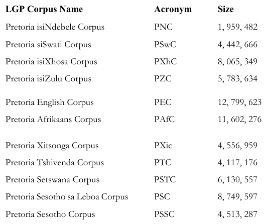
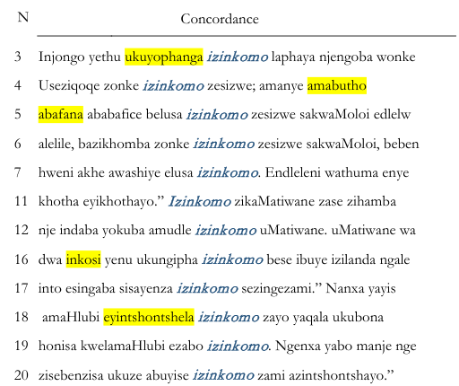

RAIL 2021Traduction automatique
Les outils Wordsmith comme catalyseur de l’analyse textuelle
Traduction automatique, non relue par un humain. L'article original est la version de référence ; les phrases soulignées sont celles dont les contrôles automatiques n'étaient pas sûrs.
Proceedings of the 2nd Workshop on Resources for African Indigenous Languages (RAIL 2021), Journal of the Digital Humanities Association of Southern Africa.
Traduction par Ernst van Gassen (Arktos AI Lab), sous licence CC BY-SA 4.0 comme l'original. Réutilisation permise avec attribution ; partage des adaptations dans les mêmes conditions. Les auteurs originaux n'ont pas relu ni approuvé cette traduction.
Texte brut réutilisable, avec sa licence : Français · LICENCE
Affiliations
Rooweither Mabuya
South African Centre for Digital Language Resources
North West University
Adresses e-mail retirées pour la protection de la vie privée. Elles figurent dans le PDF original.
Résumé
Le processus d'intellectualisation a été caractérisé comme un processus planifié visant à accélérer la croissance et le développement des langues indigènes d'Afrique du Sud afin d'en améliorer l'interface efficace avec les développements, théories et concepts modernes (Finlayson & Madiba, 2002). Les corpus sont utilisés pour développer des connaissances empiriques sur la langue. Un corpus est une collection de textes naturels dérivés de l'utilisation du langage de la vie réelle sous forme écrite ou orale (cf. Sinclair, 1991). Ces textes sont ensuite traités, stockés et accessibles par ordinateur pour être utilisés dans le développement de ressources électroniques d'une langue. Il s'agit donc d'une ressource importante dans le développement des technologies linguistiques humaines en isiZulu. Ainsi, des corpus spécialisés ont été créés pour cette étude et ont servi de base pour enquêter sur l'utilisation sensible de l'isiZulu en référence au phénomène linguistique isiHlonipho. La linguistique de corpus offre une vision plus objective de la langue que l'introspection, l'intuition et les anecdotes. Cette étude a bénéficié de l'utilisation de la suite logicielle WordSmith Tools version 6, qui a permis au chercheur d'utiliser simultanément différents programmes pour analyser les données.
Mots-clés
Construction de corpus, Wordsmith Tools, Langue à des fins spécifiques, isiHlonipho
1 Introduction
Il convient de noter que cette étude est basée sur le corpus et présente donc une discussion détaillée sur la composition des corpus, c'est-à-dire le corpus de référence (RC) et le corpus d'analyse (AC) qui ont été développés pour cette étude. Il traite également du logiciel de calcul utilisé pour interroger les corpus. Les méthodes d'extraction semi-automatiques et les requêtes de concordance sont également expliquées. La méthode de la linguistique de corpus (CL) a été utilisée pour analyser la sensibilité au genre en isiZulu.
L'isiZoulou est la langue maternelle la plus largement parlée en Afrique du Sud, avec 9 millions de locuteurs (Recensement, 2011) et est utilisée dans les médias, ainsi que dans les parlements nationaux et provinciaux. L’IsiHlonipho est généralement définie comme une pratique qui implique l’utilisation d’un vocabulaire et d’une manière de parler spécifiques à un genre particulier (Makoni, 2014).
Quatre corpus LSP ont été créés pour cette étude et ont été utilisés comme base pour enquêter sur l'utilisation du langage sensible de isiZulu. Ceux-ci ont été créés à partir des titres de livres suivants : Insila kaShaka, Bafa Baphela, Umdonsiswano et Amandl' Esambane, WordSmith Tools est une suite intégrée de programmes utilisée pour examiner comment les mots se comportent dans un corpus.
2 Construction de corpus
La linguistique de corpus est une méthode linguistique qui repose sur la création d'un corpus. Franz (1996 : 7) note que. "La linguistique basée sur le corpus se concentre sur le langage parlé ou écrit naturellement, par opposition aux phrases d'exemple individuelles qui sont conçues pour illustrer la théorie grammaticale". Un corpus est donc une collection de textes naturels dérivés de l'usage de la langue dans la vie réelle sous forme écrite ou orale. Il est ensuite traité, stocké et accessible au moyen d'ordinateurs. Le corpus devient une forme précise de données linguistiques qui reflète la langue étudiée.
Ngcobo et Nomdebevana (2010:187) indiquent que « l'une des exigences pour le développement d'une langue est la planification de son corpus ». Une langue est préservée pour la postérité et se développe également grâce à la constitution de corpus, ce qui facilite son accessibilité au public et permet le développement de technologies linguistiques humaines. Un corpus est une donnée linguistique authentique qui est conçue et collectée selon un protocole ou une procédure d’échantillonnage spécifique.
Il est important de noter que de nombreux corpus de différentes tailles et typologies ont été développés pour différentes langues parlées dans le monde. Certains de ces éléments sont disponibles via une plateforme appelée Sketch Engine. Sketch Engine est une plate-forme de gestion et d'analyse des corpus et de création de corpus accessible via le paiement d'un abonnement. Il a des corpus dans quatre-vingt-dix (90) langues, avec certains comme l'anglais ayant plusieurs corpus. Les langues africaines sur Sketch Engine sont l'afrikaans, l'arabe, l'igbo, le setswana, le swahili et le yoruba.
Il y a très peu de corpus dans les langues africaines. Certains corpus qui ont été développés pour les langues africaines n'apparaissent pas sur Sketch Engine et certains nécessitent une autorisation pour y accéder. Cela est aggravé par le fait que la plupart de ces corpus ne résident pas sur le continent mais sont hébergés et conservés dans des institutions européennes (Khumalo, 2015:24).
Dans le contexte sud-africain, l'Université de Pretoria (UP) a mené un effort massif pour développer des corpus locaux. Depuis le début de ces travaux au début des années 1990, l'UP a développé des corpus dans toutes les langues officielles du pays. Le tableau 1 présente ces corpus et leur taille.

Tableau 1: Corpus dans les langues sud-africaines (De Schryver et Prinsloo, 2000)
Le Bureau de planification et de développement linguistique de l'Université du KwaZulu-Natal (UKZN) s'est lancé dans un vaste exercice de construction du Corpus national isiZulu (INC) comme l'une des principales initiatives de l'université pour développer l'isiZulu en tant que langue de recherche, d'enseignement et d'apprentissage. L'INC a été lancé en 2014 avec un nombre impressionnant de 1,3 million de tokens. À la fin de 2017, il a atteint le cap de plus de 20 millions de tokens. Cela dépasse le Corpus Zulu de Pretoria (PZC) avec 5,7 millions de tokens et le Corpus Ukwabelana avec 100 000 tokens. Le PZC est un corpus LGP et le Ukwabelana est un LSP annoté qui est utilisé comme une ressource d'apprentissage. L’INC est un corpus de monitoring LGP équilibré en termes de texte et de contenu thématique.
Les corpus sont caractérisés selon le support, la conception, la taille, les variables linguistiques, ainsi que le balisage et l'annotation (McEnery et al., 2012). Chacun de ces composants sera discuté plus en détail comme suit :
2.1 Support
Cela fait référence au fait que le texte peut être imprimé ou manuscrit et que le texte qui constitue le corpus peut être un discours électronique ou numérisé.
2.2 Méthode de conception
La conception fait référence à la manière dont le plan de collecte du corpus est exécuté. La méthode utilisée pour collecter le corpus peut être soit équilibrée, soit opportuniste. L'équilibre fait référence à la représentativité des textes sélectionnés pour constituer le corpus. La méthode opportuniste s'appuie sur tous les textes mis à la disposition des compilateurs pour ajout au corpus.
2.3 Taille
La taille peut être fixe ou ouverte, ce qui signifie qu'il s'agit d'un corpus moniteur. La première se réfère à une typologie où la taille du corpus est planifiée, et une fois que la collection atteint l'objectif fixé, la construction du corpus s'arrête. Ce dernier fait référence à un corpus important et en constante croissance. Un corpus plus grand est considéré comme meilleur et a été utilisé dans cette étude comme un RC. Cette étude a donc utilisé à la fois le petit (AC) et le grand (RC).
2.4 Variables linguistiques
Cela fait référence à la langue dans laquelle les fichiers texte du corpus sont écrits. Un constructeur de corpus qui construit un corpus monolingue aura une langue à partir de laquelle tirer ses textes, et peut choisir de marquer toutes les références à d'autres langues dans les textes comme étrangères. Les variables linguistiques diffèrent à bien des égards parce que le chercheur doit choisir entre un corpus monolingue et un corpus multilingue. D'autres décisions à cet égard comprennent si le corpus sera synchronique ou diachronique, un corpus de langue générale ou une langue à usage spécial, et une langue écrite ou parlée.
2.5 Marquage et annotation
Dans un corpus brut, les textes qui le composent sont collectés et stockés sous forme de texte brut pour une utilisation sous leur forme originale. Le marquage ou l'annotation d'un corpus est le processus d'ajout de texte interprétatif ou d'une analyse supplémentaire au moyen de balises sur les données pour en améliorer la réutilisabilité. Un corpus peut donc être brut (plain), balisé ou annoté.
L'une des principales caractéristiques d'un corpus est la représentativité. Ceci est caractérisé comme "le degré auquel un échantillon inclut la gamme complète de variabilité dans une langue ou une variation linguistique" (Biber, 1993). Le corpus doit donc s'efforcer de refléter la langue telle qu'elle existe.
La linguistique de corpus peut être utilisée pour étudier de nombreux types de questions linguistiques. Elle a le potentiel de produire de nouvelles connaissances très intéressantes, fondamentales et souvent surprenantes sur le langage et est devenue l'une des méthodes les plus courantes dans l'investigation linguistique. La représentativité du corpus dépend de deux facteurs. Le premier est l'équilibre qui implique la gamme de genres et de registres inclus dans l'échantillonnage du corpus, tandis que le second est les techniques utilisées pour sélectionner les extraits de texte pour chaque genre.
Les textes dans un corpus doivent être convertis en format électronique pour que le corpus soit compatible avec le logiciel de traitement des données. Les documents papier doivent être numérisés pour permettre un accès électronique au corpus. Dans cette étude, les données constituant le corpus ont été sélectionnées, analysées, nettoyées, puis stockées électroniquement à l'aide de la suite logicielle Wordsmith Tools version 6. Il est important de se rappeler que tout document préparé pour une analyse de corpus n'est qu'une représentation de l'original. Selon Römer et Wulff (2010), « la linguistique des corpus peut aider le chercheur à évaluer et à décrire un phénomène linguistique d'une manière maximalement objective et donc largement neutre vis-à-vis de la théorie ».
L'avantage d'une approche CL est qu'elle étudie les mots dans leur contexte. Elle aide à comparer l'utilisation des mots dans différents documents et à déterminer comment les mots fonctionnent ensemble. Il est utilisé pour analyser et étudier un certain nombre de questions linguistiques et offre un aperçu de la dynamique du langage, ce qui en a fait l'une des méthodologies linguistiques les plus largement utilisées. La linguistique de corpus s'appuie sur les ordinateurs pour la vitesse, l'exactitude, la fiabilité et la vérification par d'autres.
3 Outils Wordsmith
Cette section présente une discussion détaillée sur le programme logiciel utilisé pour interroger le corpus LSP. Une variété d'outils d'analyse de corpus sont disponibles. Au fur et à mesure que le domaine de la CL progresse, plusieurs outils logiciels standards ont été développés et empaquetés avec des interfaces utilisateur graphiques comme des logiciels de tous les jours. Ceux-ci sont populairement connus comme des gestionnaires de corpus, des navigateurs de corpus ou des systèmes de requête de corpus. Ils fournissent des facilités pour rechercher des formes et séquences linguistiques, et analyser des morceaux de corpus.
Les gestionnaires de corpus peuvent être basés sur le web ou sur ordinateur de bureau, commercialisés ou open-source, et conçus pour des corpus spécifiques ou génériques.
Les solutions logicielles de bureau incluent WordSmith (Scott, 1996), Antconc (Anthony, 2011), MonoConc Pro (Barlow, 2000), CasualConc (Imao, 2013), Concapp (Greaves, 2007) et aConCorde (Roberts, Al-Sulaiti et Atwell, 2006). Cette étude a utilisé la solution logicielle WS Tools.
Wilkinson (2011) affirme que « la plupart des programmes d'analyse de corpus comprennent une concordance qui trouve toutes les occurrences d'un mot recherché, ou d'un motif de recherche, et les affiche au centre de votre écran sous la forme d'un affichage de mot clé dans le contexte (KWIC), avec une plage de co-texte à gauche et à droite ».
WordSmith Tools est une suite intégrée de programmes pour examiner comment les mots se comportent dans un corpus. Il a été développé par Mike Scott avec la première version sortie en 1996. En tant que suite de programmes, WordSmith Tools contient trois programmes utilisés pour interroger un corpus, à savoir, les suites de concordance, de mots-clés et de liste de mots. WordSmith Tools version 6 est une suite de programmes qui permet la manipulation de données de corpus en fonction de la fréquence, de la liste de mots, de la concordance, des collocations et du KWIC. Otlogestwe décrit ces outils comme suit ; un outil de liste de mots peut être utilisé pour produire des listes de mots ou des listes de groupes de mots à partir d'un texte. Une concordance peut donner n'importe quel mot ou expression en contexte afin que l'on puisse voir quels autres mots apparaissent à proximité. Les mots-clés calculent les mots qui sont utilisés beaucoup plus fréquemment dans un texte (Otlogestwe, 2014 : 270). La figure 1 ci-dessous montre l'interface de WS Tools et les trois fonctions principales.
Figure 1 : Interface des fonctions Concordance, Mot-clé et Liste de mots

La création d'une liste de mots est utile car c'est là et comment l'enquête est provoquée et générée avec des ratios de fréquence élevés et faibles. Selon Römer et Wulff (2010), "[…] une première étape utile dans l'approche d'un corpus ou d'un texte est de générer une liste de tous les mots qui y apparaissent avec leurs fréquences". Une liste de fréquence fournit une gamme diversifiée de types de mots, de jetons ou de formes qui composent un corpus. La liste de mots dans Wordsmith Tools version 6 est capable de créer des listes triées par ordre alphabétique et par ratio élevé à faible.
Alors qu'une liste de mots met en évidence ce qui est fréquent dans un corpus ou un texte, elle ne nous indique pas ce qui est significatif ou inhabituellement fréquent. La liste de mots-clés permet au chercheur d'identifier les mots les plus saillants ou d'une fréquence inattendue dans un corpus. Elle compare une liste de fréquences de mots basée sur le corpus à analyser (AC) avec une autre liste de fréquences de mots basée sur un RC.
Le tableau 2 liste les acronymes utilisés dans le programme Wordsmith Tools qui sont utilisés lors du test de la pertinence des mots lorsque l'AC est comparée au RC.

Tableau 2: Acronymes utilisés dans le programme Wordsmith Tools
Une concordance est une liste alphabétique des mots principaux utilisés dans un livre ou un ensemble d'œuvres. Elle répertorie chaque occurrence de chaque mot avec son contexte immédiat. Barnbrook (1996) note qu'une liste de concordance « fournit un moyen simple de replacer chaque mot dans son contexte original, afin que les détails de son utilisation et de son comportement puissent être examinés correctement ». Les concordances sont généralement affichées au format KWIC, avec le mot de recherche (ou phrase) affiché au milieu de l'écran et un certain contexte à gauche et à droite de celui-ci. Une concordance met en évidence une liste de mots particuliers ou une séquence de mots en contexte et se trouve au centre de la CL, car elle permet d'accéder à de nombreux schémas linguistiques importants dans les textes. Dans une observation désormais célèbre, Firth (1957:179) a déclaré que "vous connaîtrez un mot par la compagnie qu'il garde". Cela signifie que les collocatifs apparaîtront dans une relation lexicale entre deux ou plusieurs mots qui ont tendance à co-occurrer à quelques mots de distance l'un de l'autre dans un texte continu.
Selon Wodak et Meyer (2016), la méthodologie CL fournit des vues analytiques statistiques, cohérentes et concises sur l’information écrite, en calculant les fréquences et les mesures de signification statistique, ainsi qu’en présentant des extraits de données afin que le chercheur puisse accéder à des occurrences uniques de mots de recherche, examiner qualitativement leurs environnements collocationnels, décrire les modèles saillants et les fonctions du discours identitaire.
4 Collections
La présente étude comprenait un petit corpus LSP ciblé collecté à partir de quatre manuels de littérature isiZulu, à savoir Insila KaShaka de JL Dube (deuxième auteur masculin de l'histoire de l'écriture isiZulu), Bafa Baphela de Joyce Jessie Gwayi (première auteure féminine de l'histoire de l'écriture isiZulu), Umdonsiswano de Condy Nxaba (auteur masculin contemporain) et Amandl' Esambane de Babhekile Ngcobo (auteure féminine contemporaine). UZulu kaMalandela de P Lamula a été la première œuvre de fiction écrite par une personne zouloue en 1924 et Insila kaShaka de JL Dube a été la deuxième en 1930. Le premier livre d'un auteur zoulou fut Abantu abamnyama lapho abavela khona de Magema Fuze en 1922 qui n'était pas une œuvre littéraire. Cela a exigé que le chercheur utilise le livre de JL Dube pour cette étude car il était facile d'accès. Chacun de ces livres a été utilisé comme un AC. Un corpus LSP est un corpus spécifique à la langue, qui examine une langue restreinte à un domaine particulier (Bowker et Pearson, 2002). L'avantage d'utiliser des corpus de LSP est qu'il est plus facile d'identifier les termes spécialisés, fournissant ainsi une grande quantité d'informations concernant les mots, la fréquence, la structure et le style dans la langue spécialisée. La langue à des fins spécifiques est également utile pour détecter la différence entre la langue standard et les registres spécifiques ainsi que les néologismes (nouveaux termes) qui émergent dans la langue (Weisser, 2016). L'AC est un corpus technique, ce qui signifie qu'il est spécifique au domaine. La motivation pour choisir ces textes était de baser l'analyse sur le zoulou traditionnel/ancien et le zoulou contemporain. Insila kaShaka avec 19 425 jetons et Bafa Baphela avec 22 103 jetons tombent sous l'ère traditionnelle de l'écriture tandis que Umdonsiswano avec 49 341 jetons et Amandl' Esambane à 31 251 jetons suivent la manière contemporaine d'écrire. Les corpus LSP ont été utilisés pour comparer la sensibilité au genre dans la littérature traditionnelle à celle de la littérature contemporaine afin d'étudier tout changement de langage et d'assurer un équilibre lors de l'étude du corpus. Un RC est un corpus non technique conçu selon Oostdijk et al., (2021) pour fournir des informations complètes sur une langue. Il vise à être suffisamment large pour représenter toutes les variétés pertinentes de la langue, et le vocabulaire caractéristique, afin qu'il puisse être utilisé comme base pour des grammaires fiables, des dictionnaires, des thésaurus et d'autres matériels de référence linguistique. Le modèle de sélection définit généralement un certain nombre de paramètres qui prévoient l'inclusion de autant de variables sociolinguistiques que possible et prescrit les proportions de chaque type de texte qui est sélectionné (Oostdijk et al., 2013).
Les textes collectés pour l'AC et le RC ont été numérisés et convertis en format texte brut pour la compatibilité avec WordSmith Tools. L'analyse des données est améliorée par la mesure dans laquelle les données du corpus ont été traitées et annotées pour faciliter la réutilisation. Selon John Sinclair, un corpus peut être soit annoté, ce qui signifie qu'une analyse linguistique a été effectuée sur le texte, soit orthographique, ce qui signifie que les textes n'ont pas été analysés linguistiquement. Il qualifie ce dernier de corpus brut (Sinclair, 1991). Le corpus utilisé dans cette étude est brut et donc non annoté.
Quatre textes en zoulou ont été analysés pour tester la sensibilité au genre en utilisant un ensemble de mots qui co-occurrent, appelés collocatifs. Les analyses linguistiques qui utilisent des méthodes et des outils CL ne représentent donc pas la langue entière, mais des exemples de textes qui reflètent la langue qui doit être analysée. Les matériaux du corpus ont été recueillis à partir des corps soigneusement sélectionnés de la littérature publiée décrite ci-dessus. Les données ont été recueillies en rassemblant les textes de chaque roman/œuvre littéraire. Le corpus a été collecté et analysé à l'aide du programme logiciel Wordsmith Tools (WS Tools). L'étude a bénéficié des principales fonctionnalités de traitement des données de WS Tools, comme l'outil Liste de fréquences et l'outil Concordance. Pour permettre un examen plus approfondi des données du corpus, une Liste de Mots et une Liste de Fréquence ont été créées à partir de l'ensemble du corpus en utilisant WS Tools. L'analyse de Concordance a ensuite été menée sur des mots de contenu sélectionnés considérés comme instructifs et informatifs pour l'étude.
Le corpus a été analysé et interrogé en relation avec la sensibilité de genre. L’un des avantages de la LC et de l’analyse critique du discours est qu’elles permettent une analyse qualitative et quantitative. L'analyse quantitative vise à mesurer et qualifier les données afin de représenter numériquement une réalité donnée et examine les types et les tokens globaux, la liste de mots et la fréquence d'un mot clé de contenu. Selon Weisser (2016), le type est un mot représentatif dans la liste de fréquence d'un corpus et le token fait référence à l'occurrence individuelle d'un type particulier, c'est-à-dire le nombre de mots dans un corpus. Une liste de mots répertorie les mots qui apparaissent dans le corpus, soit par ordre alphabétique, soit par ordre de fréquence. Une liste de fréquence enregistre les mots du corpus selon le nombre de fois où ils sont utilisés. L’analyse qualitative cherche à développer l’analyse quantitative en identifiant les mots les plus fréquents et les moins fréquents. Les caractéristiques saillantes qui ont émergé du corpus étaient liées à la façon dont les textes ont relayé leur discours sur la sensibilité au genre. Cela a été fait en regardant les mots qui se produisent avant et après le mot de contexte et est connu comme le KWIC. L'étude a ainsi tiré profit d'un mélange judicieux d'approches quantitatives et qualitatives.
5 Interrogation
L'AC est un corpus LSP comptant 122 121 mots courants et le RC est un corpus LGP comptant 2 039 691 jetons. Chaque livre a été analysé pour sa keyness en isolation et par rapport aux mots-clés liés au genre. Keyness se réfère à la mesure dans laquelle les textes montrent un profil stylistique spécifique par rapport à un autre ensemble de textes. Il est quantifié en mesurant les différences positives ou négatives dans le lexique de l'auteur (s) en juxtaposition au lexique des textes dans un corpus de référence avec lequel le premier est comparé. Le chercheur a assemblé et analysé cinq corpus différents. Ils sont étiquetés Insila kaShaka (AC1), Bafa Baphela (AC2), Umdonsiswano (AC3), Amandl' Esambane (AC4), et enfin le IsiZulu National Corpus, étiqueté RC.
Pour déterminer l'importance des mots, les ratios de fréquence des mots dans le AC ont été comparés aux ratios de fréquence de ces mots tels qu'ils apparaissent dans un corpus général (le RC). Selon Mason et Platt (2006:159) "nous comptons combien de fois un item lexical particulier apparaît dans le texte. Ensuite, nous calculons combien de fois nous nous attendrions à ce que l'item apparaisse dans un texte de cette longueur, en utilisant la fréquence de l'item dans un grand corpus comme indication. Le ratio entre la fréquence observée et la fréquence attendue nous indique alors si un mot est significatif ou non".
Les mots qui apparaissent plus fréquemment dans le AC que dans le RC ont une valeur de keyness positive, tandis que ceux qui apparaissent moins fréquemment ont une valeur négative. Cela a révélé les mots qui sont sensibles au genre en isiZulu. L'analyse de keyness a fourni des preuves claires de la distinction entre la parole masculine et la parole féminine (ou sa représentation) en isiZulu. Dans la langue anglaise, il est entendu que les collocatifs qui accompagnent masculin/garçon sont généralement des mots positifs comme fort, grand, courageux, etc. Ceux qui accompagnent la femme/fille sont associés à des caractéristiques négatives telles que faible, mince, effrayée, etc. En utilisant l'approche CL, des modèles paradigmatiques similaires ont été analysés dans cette étude puisque la culture zouloue est connue pour être patriarcale. Selon Atanga et al. (2013), l'utilisation de l'isiHlonipho est liée au contrôle et à la régulation patriarcale du comportement des femmes. La coutume linguistique de l'isiHlonipho est liée à un code de comportement strict (ukuhlonipha). Mathonsi et Gumede (2006) notent que, Ukuhlonipha exige d'une femme zouloue de s'abstenir d'exprimer directement et publiquement son opinion comme un signe de sa féminité. On sait que les femmes sont marginalisées dans leur discours en langue zouloue et que leur discours diffère de celui des hommes en raison de l'utilisation de l'isiHlonipho. Cependant, ce phénomène n'est plus largement pratiqué dans le discours de la plupart des femmes zouloues modernes et elles utilisent pratiquement le même registre de discours que les hommes en raison de l'évolution progressive des hiérarchies, du statut et du pouvoir.
6 Discussion
Dans l'analyse des données, nous avons d'abord examiné les mots qui caractérisent la masculinité pour vérifier tout détail intéressant en créant une liste de mots. Il est intéressant de noter que les mots suivants ont des ratios de fréquence élevés : uJeqe, inkosi, uShaka et izinkomo, et il est évident que leur fonction est étroitement liée à celle de la masculinité et du pouvoir.
Une liste de concordance a été créée pour l'analyse du mot izinkomo. Dans la culture zouloue traditionnelle, le bétail est associé au pouvoir et à la richesse. Dans cette analyse, la notion d'izinkomo appartenant aux membres masculins de la société est évidente; la richesse est héritée par les hommes de génération en génération.

Tableau 3: Liste de concordance de AC 2
Les relations de pouvoir sont évidentes dans les lignes de concordance sélectionnées ci-dessus (voir tableau 3) où izinkomo est montré comme appartenant à la nation et comme une forme de richesse dans "[...]useziqoqe zonke izinkomo zesizwe" (il a recueilli tous les bovins qui appartiennent à la nation).
Les relations de pouvoir sont discursives, et le discours en lui-même constitue la société et la culture, sont évidentes dans cet extrait, où le bétail est représenté comme un signe de pouvoir et de richesse dans la société zouloue traditionnelle. Il est également évident dans les concordances de la ligne 16 que le bétail a une valeur transactionnelle semblable à la valeur monétaire contemporaine.
Il ressort clairement des collocatifs du tableau 3 que les izinkomo (bovins) sont associés au pouvoir brutal et impérial de saisir le bétail (cf. ligne 3). Izinkomo est également associé à un genre spécifique, mis en évidence par les collocatifs amabutho (guerriers), abafana (garçons), inkosi (roi) et -ntshontsh- (vol). Il ressort clairement de la signification associée que l'izinkomo représente la masculinité et le pouvoir dans la culture et la société zouloues. En utilisant l'analyse CL, les collocatifs mettent ainsi en évidence la représentation des relations de pouvoir. Le bétail est une forme de richesse et une telle richesse est associée à la masculinité et au pouvoir.

Tableau 4: Liste de concordance de l'AC 3
Le tableau 4 présente la liste de concordance du mot ndodana (fils) extraite de AC 3. Les collocatifs qui accompagnent ndodana dans la ligne 1 montrent clairement que le père encourage le fils à ne pas perdre espoir/foi. La positivité est soulignée. Dans la ligne 3, le fils reçoit des éloges et est célébré pour sa virilité. L'accent est mis sur le fait que «bien faire» est la marque de la virilité ou de la masculinité «muhle impela umsebenzi wakho, ndodana. Isebenza kanjena-ke indoda» (votre travail est en effet impressionnant, c'est précisément ainsi que fonctionne un homme). On observe donc que dans la culture et la société zouloues, le succès et une impression positive sont associés à un homme.
L'avantage de l'analyse des concordances est qu'elle permet d'étudier de près les textes. C'est parce que l'élément recherché est isolé et mis en évidence. Il est également accompagné de contexte de chaque côté pour comprendre le sens d'un mot inconnu et pour désambiguïser les sens problématiques des mots. Il est un fait avéré en linguistique que nous en savons plus sur un mot à travers la compagnie qu'il tient.
Les concordances énumèrent toutes les occurrences d'un mot trouvé dans le corpus sélectionné, ce qui permet de gagner du temps car il n'est pas nécessaire de parcourir chaque fichier texte séparément et d'en extraire les exemples pertinents.
Il est important de noter qu'il semble n'y avoir aucune distinction dans l'utilisation du langage sensible au genre entre les deux auteurs écrivant à la même période, c'est-à-dire l'écriture traditionnelle ancienne. Il est instructif que les données du corpus AC 2 de l'auteure féminine montrent le mot le plus fréquent amabutho 4 (guerriers) comme numéro 4 dans la liste de mots. Bien que indlovukazi, 5 (Mère du Roi/Épouse du Roi) soit au numéro 5 dans la liste de fréquence des mots, des références intéressantes comme l'instrument de guerre traditionnel, ngemikhonto, 134 (avec des lances) et des noms comme Bhekimpi, 150 (Veillant sur l'armée/Prêt pour l'attaque) sont des mots associés à la masculinité.
Ces exemples montrent clairement que les récits ou les discours des auteurs masculins et féminins sont encadrés dans les influences socioculturelles plus larges qui reflètent le monde dominé par le pouvoir et l'influence des hommes. Même le mot indlovukazi est défini par son association avec la masculinité, soit comme la "mère du Roi" ou "épouse du Roi". Les corpus AC 2 et AC 3 montrent donc clairement que l'utilisation de l'isiZulu est genrée dans le sens où les images de pouvoir, de richesse, de précision, de succès, de force, de guerre, de conquête, etc. sont toutes associées au genre masculin.
Compte tenu de l'histoire du patriarcat et d'une culture qui considère les femmes comme plus faibles, il est clair que l'isiZulu est une langue préjudiciable où les femmes sont décrites comme plus faibles que le sexe opposé. Le registre isiHlonipho a été présenté comme un bon exemple des relations asymétriques entre les sexes dans l’usage de la langue en isiZulu.
L'existence de l'isiHlonipho en tant que registre spécifique au genre pose la question de savoir si l'isiZulu, en tant que langue, a un moyen de se référer aux deux sexes sans offenser l'un ou l'autre. Il est évident à partir des corpus que les hommes ou la masculinité sont perçus positivement et sont associés au progrès, tandis que les femmes ou la féminité sont soit absentes du discours, soit perçues à travers les lentilles de la masculinité, telles que des références comme indlovukazi. Il est clair que les femmes resteront inférieures aux hommes en raison des normes patriarcales profondément ancrées dans la culture zouloue. Le corpus montre clairement dans les collocatifs que les mots qui se réfèrent aux femmes sont la plupart du temps accompagnés d'un diminutif, contrairement à ceux qui se réfèrent aux hommes.
Il est également remarquable qu'il n'y ait aucune preuve de corpus dans la littérature contemporaine, tant des auteurs masculins que féminins, suggérant un écart marqué par rapport à un langage genré historique biaisé en faveur de la célébration de la masculinité vers une utilisation plus neutre et sensible au genre.
7 Conclusion
Afin de documenter et d'expliciter les attitudes envers les femmes, une approche multi-méthodes intégrant principalement des méthodes qualitatives et soutenue par des méthodes quantitatives a été utilisée pour analyser les données. L'avantage d'une telle approche est que la richesse et la précision de l'analyse qualitative sont combinées avec des résultats statistiquement fiables et généralisables (Schmied, 1993). En général, la recherche qualitative est utilisée pour décrire et répondre aux questions du point de vue d'un participant. Les données sont utilisées pour identifier des éléments, expliquer des aspects de l'utilisation et fournir des exemples concrets de ceux-ci. Le processus inductif des études qualitatives procède par des questions générales, la collecte de grandes quantités de données, l'observation minutieuse des données, puis la présentation des résultats, qui peuvent produire des réponses provisoires sur ce qui a été observé (Glesne et Peshkins, 1992).
Cette recherche a donc incorporé une collecte et une organisation de l'information textuelle dans un corpus, ainsi qu'une enquête et une interrogation du corpus afin de discerner les relations et les pratiques sociales liées à une communauté ou à une société de langue isiZulu. Il est à noter que l'ADC s'intéresse à une enquête minutieuse et longue sur les causes majeures des événements et les résultats des questions qui s'y rapportent. Par conséquent, il nécessite un enregistrement point par point des connexions entre le contenu, le discours, la société et la culture.
8 Références
Adolphs, S. 2000. Introducing electronic text analysis. New York: Routledge.
Anthony, L. 2011. AntConc (Version 3.2. 2) [Computer Software]. Tokyo, Japan: Waseda University.
Baker, P. and McEnery, T. 2005. A corpus-based approach to discourses of refugees and asylum seekers in UN and newspaper texts, Journal of Language & Politics, 4:2,197-226.
Barlow, M. 2000. Monoconc Pro 2.0: Athelstan.
Barnbrook, G. 1996. Language and Computers: A Practical Introduction to the Computer Analysis of Language. Edinburgh: Edinburgh University Press.
Biber, D., Conrad, S. and Reppen, R. 1998. Corpus linguistics: Investigating language structure and use. Cambridge University Press.
Bower, L. and Pearson, J. 2002. Working with Specialized Language: A practical guide to using copora. London: Routledge.
Chitauro-Mawema, M. 2006. Gender Sensitivity in Shona Language Use: A lexicographic and corpus-based study of words in context.
Dowling, T. 1988. IsiHlonipho Sabafazi: The Xhosa women's language of respect. A sociolinguistic exploration. MA Thesis, University of Cape Town, South Africa.
Finlayson, R. 1982. Hlonipha - the women's language of avoidance among the Xhosa. South African Journal of African Languages, 1:1, 35-60.
Franz, A. 1996. Automatic Ambiguity Resolution in Natural Language Processing: An Empirical Approach. Tokyo: Springer.
Glesne, C. and Peshkins, A. 1992. Becoming Qualitative Researchers: An introduction. White Plains, NY: Longman.
Hammer, A. and Damascelli, A. T. 2002. Corpus Linguistics and Computational Linguistics: An overview with Special Reference to English. Torino: Celid.
Khumalo, L. 2015a. Advances in Developing corpora in African languages. Kuwala, 1:2, 21-30.
Khumalo, L. 2015b. Semi-automatic Term Extraction for an isiZulu Linguistic Terms Dictionary. Lexikos, 25 (AFRILEX-reeks/series 25:2015), 495-506.
Khumalo, L. n.d. Corpora as agency in the intellectualization of African languages.
Krishnamurthy, R. 2011. Accessing all areas: Corpus Analysis methods in inter-disciplinary applications.
Luthuli, T. 2007. Assessing Politeness, Language and Gender in Hlonipha. MA Thesis, University of KwaZulu-Natal, South Africa.
Mabuya, R. 2018. A corpus linguistic analysis of gender sensitive language in isiZulu. MA Thesis, University of KwaZulu-Natal, South Africa.
Makoni, B. 2014. Feminizing linguistic human rights: use of isihlonipho sabafazi in the courtroom and intra-group linguistic differences, Journal of Multicultural Discourses, 9:1, 27-43.
Mason, O. and Platt, R. 2006. Embracing a new creed: Lexical patterning and the encoding od ideology. College Literature 33:1,155-170.
Mathonsi, N. and Gumede, S.H. 2006. Communication through performance: Izigiyo Zawomame as Gendered Protests. Journal of Southern African Linguistics and Applied Language Studies, 24:4,483-494.
McEnery, T. and Wilson, A. 1996. Corpus Linguistics. Edinburgh: Edinburgh University Press.
Ngcobo, M.N. and Nomdebevana, N. 2010. The Role of Spoken Language Corpora in the Intellectualisation of Indigenous Languages in South Africa. Alternation: Interdisciplinary Journal for the Study of the Arts and Humanities in Southern Africa. 17:1,186-206.
Oostdijk, N., Reynaert, M., Hoste, V. and Schuurman, I. 2013. The construction of a 500 million word reference corpus of contemporary written Dutch: Essential Speech and Language Technology for Dutch. (eds) Spyns, P and Odijk, J. Springer: Heidelberg.
Otlogetswe, T.J. 2014. Extracting business terms for dictionary subject label. In African Languages and Linguistic Theory. CASAS Book Series 109. Cape Town: CASAS.
Scott, M. 1996. WordSmith tools: Oxford: Oxford University Press.
Sinclair, J.M. 1991. Corpus concordance collocation. Oxford: Oxford University Press.
Sinclair, J. M. 2004. How to use corpora in language teaching (Vol. 12). John Benjamins Publishing.
Spiegler, S., Van Der Spuy, A., and Flach, P. A. 2010. Ukwabelana: An open-source morphological Zulu corpus. Paper presented at the Proceedings of the 23rd International Conference on Computational Linguistics.
Spiegler, S. 2011. Machine learning for the analysis of morphologically complex languages. University of Bristol.
Swales, J. 2000. Languages for Special Purposes. Annual Review of Applied Linguistics, 20, 59-76. Cambridge: Cambridge University Press.
Weisser, M. 2016. Practical Corpus Linguistics: An Introduction to Corpus-Based Language Analysis. United Kingdom: Wiley Blackwell.
Wilkinson, S. 2011. Analysing focus group data. In D. Silverman (Ed.), Qualitative research (3rd ed., pp. 168-184). London, UK: Sage.
English et Français
Wordsmith Tools as an Enabler for Text Analysis
Les outils Wordsmith comme catalyseur de l’analyse textuelle
Affiliations
Rooweither Mabuya
South African Centre for Digital Language Resources
North West University
Affiliations
Rooweither Mabuya
South African Centre for Digital Language Resources
North West University
Abstract
Résumé
The process of intellectualization has been characterized as a planned process of accelerating the growth and development of South Africa's indigenous languages to enhance their effective interface with modern developments, theories and concepts (Finlayson & Madiba, 2002). Corpora are used to develop empirical knowledge about language. A corpus is a collection of naturally occurring texts derived from real life language use in either written or spoken form (cf. Sinclair, 1991). These texts are then processed, stored and accessed by means of computers for use in developing electronic resources of a language. It is thus an important resource in the development of isiZulu Human Language Technologies. Thus, specialized corpora were created for this study and were used as the basis to enquire into the sensitive use of isiZulu with reference to language phenomenon isiHlonipho. Corpus linguistics provides a more objective view of language than introspection, intuition and anecdotes. This study profited from the use of the WordSmith Tools version 6 software program suite, which allowed the researcher to use different programs simultaneously to analyse data.
Le processus d'intellectualisation a été caractérisé comme un processus planifié visant à accélérer la croissance et le développement des langues indigènes d'Afrique du Sud afin d'en améliorer l'interface efficace avec les développements, théories et concepts modernes (Finlayson & Madiba, 2002). Les corpus sont utilisés pour développer des connaissances empiriques sur la langue. Un corpus est une collection de textes naturels dérivés de l'utilisation du langage de la vie réelle sous forme écrite ou orale (cf. Sinclair, 1991). Ces textes sont ensuite traités, stockés et accessibles par ordinateur pour être utilisés dans le développement de ressources électroniques d'une langue. Il s'agit donc d'une ressource importante dans le développement des technologies linguistiques humaines en isiZulu. Ainsi, des corpus spécialisés ont été créés pour cette étude et ont servi de base pour enquêter sur l'utilisation sensible de l'isiZulu en référence au phénomène linguistique isiHlonipho. La linguistique de corpus offre une vision plus objective de la langue que l'introspection, l'intuition et les anecdotes. Cette étude a bénéficié de l'utilisation de la suite logicielle WordSmith Tools version 6, qui a permis au chercheur d'utiliser simultanément différents programmes pour analyser les données.
Keywords
Mots-clés
Corpus Building, Wordsmith Tools, Language for Specific Purposes, isiHlonipho
Construction de corpus, Wordsmith Tools, Langue à des fins spécifiques, isiHlonipho
1 Introduction
1 Introduction
It must be noted that this study is corpus based and therefore presents a detailed discussion on the composition of the corpora, that is, the Reference Corpus (RC) and the Analysis Corpora (AC) that were developed for this study. It also discusses the computational software used to query the corpora. Semi-automatic extraction methods and concordance queries are also explained. The Corpus Linguistics (CL) method was used to analyse gender sensitivity in isiZulu.
Il convient de noter que cette étude est basée sur le corpus et présente donc une discussion détaillée sur la composition des corpus, c'est-à-dire le corpus de référence (RC) et le corpus d'analyse (AC) qui ont été développés pour cette étude. Il traite également du logiciel de calcul utilisé pour interroger les corpus. Les méthodes d'extraction semi-automatiques et les requêtes de concordance sont également expliquées. La méthode de la linguistique de corpus (CL) a été utilisée pour analyser la sensibilité au genre en isiZulu.
IsiZulu is the most widely spoken first language in South Africa, with 9 million speakers (Census, 2011) and is used in the media, and in the national and provincial parliaments. IsiHlonipho is generally defined as a practice that involves the use of a particular vocabulary and manner of speaking that is specific to a particular gender (Makoni, 2014).
L'isiZoulou est la langue maternelle la plus largement parlée en Afrique du Sud, avec 9 millions de locuteurs (Recensement, 2011) et est utilisée dans les médias, ainsi que dans les parlements nationaux et provinciaux. L’IsiHlonipho est généralement définie comme une pratique qui implique l’utilisation d’un vocabulaire et d’une manière de parler spécifiques à un genre particulier (Makoni, 2014).
Four LSP corpora were created for this study and were used as the basis to enquire into the sensitive language use of isiZulu. These were created from the following book titles: Insila kaShaka, Bafa Baphela, Umdonsiswano, and Amandl' Esambane, WordSmith Tools is an integrated suite of programs that is used for examining how words behave in a corpus.
Quatre corpus LSP ont été créés pour cette étude et ont été utilisés comme base pour enquêter sur l'utilisation du langage sensible de isiZulu. Ceux-ci ont été créés à partir des titres de livres suivants : Insila kaShaka, Bafa Baphela, Umdonsiswano et Amandl' Esambane, WordSmith Tools est une suite intégrée de programmes utilisée pour examiner comment les mots se comportent dans un corpus.
2 Corpus Building
2 Construction de corpus
Corpus linguistics is a linguistic method that is based on the creation of a corpus. Franz (1996: 7) notes that. "Corpus based linguistics focuses on naturally occurring spoken or written language, as opposed to individual example sentences that are designed to illustrate grammatical theory". A corpus is thus a collection of naturally occurring texts derived from real life language use in written or spoken form. It is then processed, stored and accessed by means of computers. The corpus becomes an accurate form of linguistic data that mirrors the language under investigation.
La linguistique de corpus est une méthode linguistique qui repose sur la création d'un corpus. Franz (1996 : 7) note que. "La linguistique basée sur le corpus se concentre sur le langage parlé ou écrit naturellement, par opposition aux phrases d'exemple individuelles qui sont conçues pour illustrer la théorie grammaticale". Un corpus est donc une collection de textes naturels dérivés de l'usage de la langue dans la vie réelle sous forme écrite ou orale. Il est ensuite traité, stocké et accessible au moyen d'ordinateurs. Le corpus devient une forme précise de données linguistiques qui reflète la langue étudiée.
Ngcobo and Nomdebevana (2010:187) indicate that, "one of the requirements for the development of a language is the planning of its corpus". A language is preserved for posterity and is also developed through corpus building, which aids its accessibility to the public and enables the development of human language technologies. A corpus is authentic language data which is designed and collected according to a specific sampling protocol or procedure.
Ngcobo et Nomdebevana (2010:187) indiquent que « l'une des exigences pour le développement d'une langue est la planification de son corpus ». Une langue est préservée pour la postérité et se développe également grâce à la constitution de corpus, ce qui facilite son accessibilité au public et permet le développement de technologies linguistiques humaines. Un corpus est une donnée linguistique authentique qui est conçue et collectée selon un protocole ou une procédure d’échantillonnage spécifique.
It is important to note that many corpora of different sizes and typologies have been developed for different languages that are spoken globally. Some of these are available through a repository called the Sketch Engine platform. Sketch Engine is a platform for corpora management and analysis and creation of corpora that is accessed through payment of a subscription. It has corpora in ninety (90) languages, with some like English having multiple corpora. African languages on Sketch Engine are Afrikaans, Arabic, Igbo, Setswana, Swahili and Yoruba.
Il est important de noter que de nombreux corpus de différentes tailles et typologies ont été développés pour différentes langues parlées dans le monde. Certains de ces éléments sont disponibles via une plateforme appelée Sketch Engine. Sketch Engine est une plate-forme de gestion et d'analyse des corpus et de création de corpus accessible via le paiement d'un abonnement. Il a des corpus dans quatre-vingt-dix (90) langues, avec certains comme l'anglais ayant plusieurs corpus. Les langues africaines sur Sketch Engine sont l'afrikaans, l'arabe, l'igbo, le setswana, le swahili et le yoruba.
There are very few corpora in African languages. Some corpora that have been developed for African languages do not appear on Sketch Engine and some require permission to access them. This is compounded by the fact that most of these corpora do not reside on the continent but are hosted and kept in European institutions (Khumalo, 2015:24).
Il y a très peu de corpus dans les langues africaines. Certains corpus qui ont été développés pour les langues africaines n'apparaissent pas sur Sketch Engine et certains nécessitent une autorisation pour y accéder. Cela est aggravé par le fait que la plupart de ces corpus ne résident pas sur le continent mais sont hébergés et conservés dans des institutions européennes (Khumalo, 2015:24).
Within the South African context, the University of Pretoria (UP) has led a massive effort to develop local corpora. Since this work started in the early 1990s, UP has developed corpora in all the country's official languages. Table 1 shows these corpora and their size.
Dans le contexte sud-africain, l'Université de Pretoria (UP) a mené un effort massif pour développer des corpus locaux. Depuis le début de ces travaux au début des années 1990, l'UP a développé des corpus dans toutes les langues officielles du pays. Le tableau 1 présente ces corpus et leur taille.
Table 1: Corpora in South African languages (De Schryver and Prinsloo, 2000)
Tableau 1: Corpus dans les langues sud-africaines (De Schryver et Prinsloo, 2000)
The University Language Planning and Development Office (ULPDO) at the University of KwaZulu-Natal (UKZN) embarked on a massive isiZulu National Corpus (INC) building exercise as one of the university's major initiatives to develop isiZulu as a language of research, teaching and learning. The INC was piloted in 2014 at an impressive number of 1.3 million tokens. At the end of 2017, it reached the milestone of over 20 million tokens. This surpasses the earlier Pretoria Zulu Corpus (PZC) at 5.7 million tokens and the Ukwabelana Corpus with 100 000 tokens. The PZC is an LGP corpus and the Ukwabelana is a LSP annotated one that is used as a learning resource. The INC is an LGP monitor corpus which is balanced in terms of text and thematic content.
Le Bureau de planification et de développement linguistique de l'Université du KwaZulu-Natal (UKZN) s'est lancé dans un vaste exercice de construction du Corpus national isiZulu (INC) comme l'une des principales initiatives de l'université pour développer l'isiZulu en tant que langue de recherche, d'enseignement et d'apprentissage. L'INC a été lancé en 2014 avec un nombre impressionnant de 1,3 million de tokens. À la fin de 2017, il a atteint le cap de plus de 20 millions de tokens. Cela dépasse le Corpus Zulu de Pretoria (PZC) avec 5,7 millions de tokens et le Corpus Ukwabelana avec 100 000 tokens. Le PZC est un corpus LGP et le Ukwabelana est un LSP annoté qui est utilisé comme une ressource d'apprentissage. L’INC est un corpus de monitoring LGP équilibré en termes de texte et de contenu thématique.
Corpora are characterised according to medium, design, size, language variables, and mark-up and annotation (McEnery et al., 2012). Each of these components will be further discussed as follows:
Les corpus sont caractérisés selon le support, la conception, la taille, les variables linguistiques, ainsi que le balisage et l'annotation (McEnery et al., 2012). Chacun de ces composants sera discuté plus en détail comme suit :
2.1 Medium
2.1 Support
This refers to the fact that the text can either be printed or handwritten and that the text that makes up the corpus can be electronic or digitised speech.
Cela fait référence au fait que le texte peut être imprimé ou manuscrit et que le texte qui constitue le corpus peut être un discours électronique ou numérisé.
2.2 Design method
2.2 Méthode de conception
The design refers to the manner in which the corpus collection plan is executed. The method used to collect the corpus can either be balanced or opportunistic. Balance refers to the representativeness of the texts selected to make up the corpus. The opportunistic method relies on any texts made available to the compilers for addition to the corpus.
La conception fait référence à la manière dont le plan de collecte du corpus est exécuté. La méthode utilisée pour collecter le corpus peut être soit équilibrée, soit opportuniste. L'équilibre fait référence à la représentativité des textes sélectionnés pour constituer le corpus. La méthode opportuniste s'appuie sur tous les textes mis à la disposition des compilateurs pour ajout au corpus.
2.3 Size
2.3 Taille
The size can either be fixed or open ended, meaning that it is a monitor corpus. The former refers to a typology where the size of the corpus is planned, and once the collection reaches the set target, corpus building stops. The latter refers to a big and continuously growing corpus. A bigger corpus is considered to be better and was used in this study as an RC. This study thus used both the small (AC) and the big (RC).
La taille peut être fixe ou ouverte, ce qui signifie qu'il s'agit d'un corpus moniteur. La première se réfère à une typologie où la taille du corpus est planifiée, et une fois que la collection atteint l'objectif fixé, la construction du corpus s'arrête. Ce dernier fait référence à un corpus important et en constante croissance. Un corpus plus grand est considéré comme meilleur et a été utilisé dans cette étude comme un RC. Cette étude a donc utilisé à la fois le petit (AC) et le grand (RC).
2.4 Language variables
2.4 Variables linguistiques
This refers to the language in which the corpus text files are written. A corpus builder constructing a monolingual corpus will have one language from which to draw his/her texts, and may choose to tag all references to other languages in the texts as foreign. Language variables differ in many ways because the researcher has to choose between a monolingual and a multilingual corpus. Other decisions in this regard include whether the corpus will be synchronic or diachronic, a general language corpus or a language for special purpose, and a written or spoken language.
Cela fait référence à la langue dans laquelle les fichiers texte du corpus sont écrits. Un constructeur de corpus qui construit un corpus monolingue aura une langue à partir de laquelle tirer ses textes, et peut choisir de marquer toutes les références à d'autres langues dans les textes comme étrangères. Les variables linguistiques diffèrent à bien des égards parce que le chercheur doit choisir entre un corpus monolingue et un corpus multilingue. D'autres décisions à cet égard comprennent si le corpus sera synchronique ou diachronique, un corpus de langue générale ou une langue à usage spécial, et une langue écrite ou parlée.
2.5 Mark-up and annotation
2.5 Marquage et annotation
In a raw corpus, the texts that comprise it are collected and stored as plain text for use in their original form. Corpus mark up or annotation is the process of adding interpretive text or further analysis by way of tags on the data to enhance its reusability. A corpus can thus be raw (plain), marked-up or annotated.
Dans un corpus brut, les textes qui le composent sont collectés et stockés sous forme de texte brut pour une utilisation sous leur forme originale. Le marquage ou l'annotation d'un corpus est le processus d'ajout de texte interprétatif ou d'une analyse supplémentaire au moyen de balises sur les données pour en améliorer la réutilisabilité. Un corpus peut donc être brut (plain), balisé ou annoté.
One of the main characteristics of a corpus is representativeness. This is characterized as "the extent to which a sample includes the full range of variability in a language or language variation" (Biber, 1993). The corpus should thus strive to mirror the language as it exists.
L'une des principales caractéristiques d'un corpus est la représentativité. Ceci est caractérisé comme "le degré auquel un échantillon inclut la gamme complète de variabilité dans une langue ou une variation linguistique" (Biber, 1993). Le corpus doit donc s'efforcer de refléter la langue telle qu'elle existe.
Corpus linguistics can be used to investigate many kinds of linguistic questions. It has the potential to yield highly interesting, fundamental and often surprising new insights into language and has become one of the most common methods in linguistic investigation. Corpus representativeness depends on two factors. The first is balance that entails the range of genres and registers included in the corpus sampling, while the second is the techniques used to select the text extracts for each genre.
La linguistique de corpus peut être utilisée pour étudier de nombreux types de questions linguistiques. Elle a le potentiel de produire de nouvelles connaissances très intéressantes, fondamentales et souvent surprenantes sur le langage et est devenue l'une des méthodes les plus courantes dans l'investigation linguistique. La représentativité du corpus dépend de deux facteurs. Le premier est l'équilibre qui implique la gamme de genres et de registres inclus dans l'échantillonnage du corpus, tandis que le second est les techniques utilisées pour sélectionner les extraits de texte pour chaque genre.
Texts in a corpus need to be converted into electronic format in order for the corpus to be compatible with the data handling software program. Hardcopy materials need to be scanned for electronic access to the corpus. In this study the data that makes up the corpus was selected, analysed, cleaned, and then stored electronically using the Wordsmith Tools version 6 software program suite. It is important to remember that any document prepared for corpus analysis is only a representation of the original one. According to Römer and Wulff (2010), "corpus linguistics can assist the researcher to assess and describe a linguistic phenomenon in a maximally objective and hence largely theory-neutral fashion".
Les textes dans un corpus doivent être convertis en format électronique pour que le corpus soit compatible avec le logiciel de traitement des données. Les documents papier doivent être numérisés pour permettre un accès électronique au corpus. Dans cette étude, les données constituant le corpus ont été sélectionnées, analysées, nettoyées, puis stockées électroniquement à l'aide de la suite logicielle Wordsmith Tools version 6. Il est important de se rappeler que tout document préparé pour une analyse de corpus n'est qu'une représentation de l'original. Selon Römer et Wulff (2010), « la linguistique des corpus peut aider le chercheur à évaluer et à décrire un phénomène linguistique d'une manière maximalement objective et donc largement neutre vis-à-vis de la théorie ».
The advantage of a CL approach is that it studies the words in context. It assists in comparing the use of words in different documents and in determining how words work together. It is used to analyse and research a number of linguistic questions and offers insights into the dynamics of language, which has made it one of the most widely used linguistic methodologies. Corpus linguistics relies on computers for speed, accuracy, reliability and verification by others.
L'avantage d'une approche CL est qu'elle étudie les mots dans leur contexte. Elle aide à comparer l'utilisation des mots dans différents documents et à déterminer comment les mots fonctionnent ensemble. Il est utilisé pour analyser et étudier un certain nombre de questions linguistiques et offre un aperçu de la dynamique du langage, ce qui en a fait l'une des méthodologies linguistiques les plus largement utilisées. La linguistique de corpus s'appuie sur les ordinateurs pour la vitesse, l'exactitude, la fiabilité et la vérification par d'autres.
3 Wordsmith Tools
3 Outils Wordsmith
This section presents a detailed discussion on the software program used to query the LSP corpus. A variety of corpus analysis tools are available. As the CL field advances, several off-the-shelf software tools have been developed and packaged with graphical user interfaces like day-to-day software. These are popularly known as corpus managers, corpus browsers or corpus query systems. They provide facilities for searching for language forms and sequences, and analyzing corpus chunks.
Cette section présente une discussion détaillée sur le programme logiciel utilisé pour interroger le corpus LSP. Une variété d'outils d'analyse de corpus sont disponibles. Au fur et à mesure que le domaine de la CL progresse, plusieurs outils logiciels standards ont été développés et empaquetés avec des interfaces utilisateur graphiques comme des logiciels de tous les jours. Ceux-ci sont populairement connus comme des gestionnaires de corpus, des navigateurs de corpus ou des systèmes de requête de corpus. Ils fournissent des facilités pour rechercher des formes et séquences linguistiques, et analyser des morceaux de corpus.
Corpus managers may be web or desktop-based, commercially marketed or open-source, and designed for specific corpora or generic.
Les gestionnaires de corpus peuvent être basés sur le web ou sur ordinateur de bureau, commercialisés ou open-source, et conçus pour des corpus spécifiques ou génériques.
Desktop software solutions include WordSmith (Scott, 1996), Antconc (Anthony, 2011), MonoConc Pro (Barlow, 2000), CasualConc (Imao, 2013), Concapp (Greaves, 2007), and aConCorde (Roberts, Al-Sulaiti, and Atwell, 2006). This study employed the WS Tools software solution.
Les solutions logicielles de bureau incluent WordSmith (Scott, 1996), Antconc (Anthony, 2011), MonoConc Pro (Barlow, 2000), CasualConc (Imao, 2013), Concapp (Greaves, 2007) et aConCorde (Roberts, Al-Sulaiti et Atwell, 2006). Cette étude a utilisé la solution logicielle WS Tools.
Wilkinson (2011) states that "most corpus analysis programs include a concordance which finds all the occurrences of a search word, or search pattern, and displays them in the centre of your screen as a keyword in context (KWIC) display, together with a span of co-text to the left and right".
Wilkinson (2011) affirme que « la plupart des programmes d'analyse de corpus comprennent une concordance qui trouve toutes les occurrences d'un mot recherché, ou d'un motif de recherche, et les affiche au centre de votre écran sous la forme d'un affichage de mot clé dans le contexte (KWIC), avec une plage de co-texte à gauche et à droite ».
WordSmith Tools is an integrated suite of programs for examining how words behave in a corpus. It was developed by Mike Scott with the first version released in 1996. As a suite of programs, WordSmith Tools contains three programs that are used to query a corpus, namely, the concordance, key word, and word list suites. WordSmith Tools version 6 is a suite of programs that enables manipulation of corpus data according to frequency, word list, concordance, collocations and KWIC. Otlogestwe describes these tools as follows; a wordlist tool can be used to produce wordlists or word-cluster lists from a text. A concord can give any word or phrase in context so one can see what other words occur in its vicinity. Keywords calculate words which are used much more frequently in a text (Otlogestwe, 2014: 270). Figure 1 below shows the interface of WS Tools and the three main functions.
WordSmith Tools est une suite intégrée de programmes pour examiner comment les mots se comportent dans un corpus. Il a été développé par Mike Scott avec la première version sortie en 1996. En tant que suite de programmes, WordSmith Tools contient trois programmes utilisés pour interroger un corpus, à savoir, les suites de concordance, de mots-clés et de liste de mots. WordSmith Tools version 6 est une suite de programmes qui permet la manipulation de données de corpus en fonction de la fréquence, de la liste de mots, de la concordance, des collocations et du KWIC. Otlogestwe décrit ces outils comme suit ; un outil de liste de mots peut être utilisé pour produire des listes de mots ou des listes de groupes de mots à partir d'un texte. Une concordance peut donner n'importe quel mot ou expression en contexte afin que l'on puisse voir quels autres mots apparaissent à proximité. Les mots-clés calculent les mots qui sont utilisés beaucoup plus fréquemment dans un texte (Otlogestwe, 2014 : 270). La figure 1 ci-dessous montre l'interface de WS Tools et les trois fonctions principales.
Figure 1: Interface of Concordance, Keyword and Wordlist functions
Figure 1 : Interface des fonctions Concordance, Mot-clé et Liste de mots
Creating a word list is useful because this is where and how the investigation is prompted and generated with high and low frequency ratios. According to Römer and Wulff (2010), "[…] a useful first step in approaching a corpus or text is to generate a list of all the words that occur in it together with their frequencies". A frequency list provides a range of diverse types of words, tokens, or forms which make up a corpus. The word list in Wordsmith Tools version 6 is able to create alphabetical, high-to-low ratio sorted lists.
La création d'une liste de mots est utile car c'est là et comment l'enquête est provoquée et générée avec des ratios de fréquence élevés et faibles. Selon Römer et Wulff (2010), "[…] une première étape utile dans l'approche d'un corpus ou d'un texte est de générer une liste de tous les mots qui y apparaissent avec leurs fréquences". Une liste de fréquence fournit une gamme diversifiée de types de mots, de jetons ou de formes qui composent un corpus. La liste de mots dans Wordsmith Tools version 6 est capable de créer des listes triées par ordre alphabétique et par ratio élevé à faible.
While a word list highlights what is frequent in a corpus or text, it does not tell us what is significant or unusually frequent. The keyword list enables the researcher to identify the most outstanding or unexpectedly frequent words in a corpus. It compares a frequency wordlist based on the corpus under analysis (AC) with another frequency wordlist based on an RC.
Alors qu'une liste de mots met en évidence ce qui est fréquent dans un corpus ou un texte, elle ne nous indique pas ce qui est significatif ou inhabituellement fréquent. La liste de mots-clés permet au chercheur d'identifier les mots les plus saillants ou d'une fréquence inattendue dans un corpus. Elle compare une liste de fréquences de mots basée sur le corpus à analyser (AC) avec une autre liste de fréquences de mots basée sur un RC.
Table 2 lists the acronyms used in the Wordsmith Tools program that are used when testing for keyness of words when the AC is compared with the RC.
Le tableau 2 liste les acronymes utilisés dans le programme Wordsmith Tools qui sont utilisés lors du test de la pertinence des mots lorsque l'AC est comparée au RC.
Table 2: Acronyms used in the Wordsmith Tools program
Tableau 2: Acronymes utilisés dans le programme Wordsmith Tools
A concordance is an alphabetical list of the primary words used in a book or body of work. It lists every instance of each word with its immediate context. Barnbrook (1996) notes that a concordancy list "provides a simple way of placing each word back in its original context, so that the details of its use and behaviour can be properly examined". Concordances are usually displayed in KWIC format, with the search word (or phrase) shown in the middle of the screen and some context to left and right of it. A concordance highlights a list of particular words or a sequence of words in context and is at the centre of CL as it enables access to many important language patterns in texts. In a now famous observation, Firth (1957:179) stated that "you shall know a word by the company it keeps". This means that collocates will occur in a lexical relation between two or more words which have a tendency to co-occur within a few words of each other in running text.
Une concordance est une liste alphabétique des mots principaux utilisés dans un livre ou un ensemble d'œuvres. Elle répertorie chaque occurrence de chaque mot avec son contexte immédiat. Barnbrook (1996) note qu'une liste de concordance « fournit un moyen simple de replacer chaque mot dans son contexte original, afin que les détails de son utilisation et de son comportement puissent être examinés correctement ». Les concordances sont généralement affichées au format KWIC, avec le mot de recherche (ou phrase) affiché au milieu de l'écran et un certain contexte à gauche et à droite de celui-ci. Une concordance met en évidence une liste de mots particuliers ou une séquence de mots en contexte et se trouve au centre de la CL, car elle permet d'accéder à de nombreux schémas linguistiques importants dans les textes. Dans une observation désormais célèbre, Firth (1957:179) a déclaré que "vous connaîtrez un mot par la compagnie qu'il garde". Cela signifie que les collocatifs apparaîtront dans une relation lexicale entre deux ou plusieurs mots qui ont tendance à co-occurrer à quelques mots de distance l'un de l'autre dans un texte continu.
According to Wodak and Meyer (2016), the CL methodology provides statistical and coherence and concise analytical views on written information, computing frequencies and measures of statistical significance, as well as presenting data extracts so that the researcher can access single occurrences of search words, qualitatively examine their collocational environments, describe salient patterns and identity discourse functions.
Selon Wodak et Meyer (2016), la méthodologie CL fournit des vues analytiques statistiques, cohérentes et concises sur l’information écrite, en calculant les fréquences et les mesures de signification statistique, ainsi qu’en présentant des extraits de données afin que le chercheur puisse accéder à des occurrences uniques de mots de recherche, examiner qualitativement leurs environnements collocationnels, décrire les modèles saillants et les fonctions du discours identitaire.
4 Collections
4 Collections
The current study comprised of a small, targeted LSP corpus collected from four isiZulu literature text books, namely, Insila KaShaka by JL Dube (second male author in the history of isiZulu writing), Bafa Baphela by Joyce Jessie Gwayi (first female author in the history of isiZulu writing), Umdonsiswano by Condy Nxaba (contemporary male author), and Amandl' Esambane by Babhekile Ngcobo (contemporary female author). P Lamula's UZulu kaMalandela was the first piece of fiction written by a Zulu person in 1924 and JL Dube's Insila kaShaka was the second in 1930. The first book by a Zulu author was Magema Fuze's Abantu abamnyama lapho abavela khona in 1922 which was not a literary work. This required that the researcher use JL Dube's book for this study as it was easy to access. Each of these books was used as an AC. An LSP corpus is a language specific corpus, which looks into language that is restricted to a particular domain (Bowker and Pearson, 2002). The advantage of using LSP corpora is that it is easier to identify specialized terms, thus providing a large amount of information with regard to the words, frequency, structure and style in the specialised language. Language for Specific Purposes is also useful in picking up the difference between standard language and specific registers as well as neologisms (new terms) that emerge in the language (Weisser, 2016). The AC is a technical corpus, meaning that it is domain specific. The motivation for choosing these texts was basing the analysis on traditional/old Zulu and contemporary Zulu. Insila kaShaka with 19 425 tokens and Bafa Baphela with 22 103 tokens fall under the traditional era of writing whilst Umdonsiswano with 49 341 tokens and Amandl' Esambane at 31 251 tokens follow the contemporary way of writing. The LSP corpora were used to compare gender sensitivity in traditional literature to that in contemporary literature to investigate any language shift and ensure a balance when investigating the corpus. An RC is a non-technical corpus that is designed according to Oostdijk et al., (2021) to provide comprehensive information about a language. It aims to be large enough to represent all the relevant varieties of the language, and the characteristic vocabulary, so that it can be used as a basis for reliable grammars, dictionaries, thesauri and other language reference material. The model for selection usually defines a number of parameters that provide for the inclusion of as many sociolinguistic variables as possible and prescribes the proportions of each text types that is selected (Oostdijk et al., 2013).
La présente étude comprenait un petit corpus LSP ciblé collecté à partir de quatre manuels de littérature isiZulu, à savoir Insila KaShaka de JL Dube (deuxième auteur masculin de l'histoire de l'écriture isiZulu), Bafa Baphela de Joyce Jessie Gwayi (première auteure féminine de l'histoire de l'écriture isiZulu), Umdonsiswano de Condy Nxaba (auteur masculin contemporain) et Amandl' Esambane de Babhekile Ngcobo (auteure féminine contemporaine). UZulu kaMalandela de P Lamula a été la première œuvre de fiction écrite par une personne zouloue en 1924 et Insila kaShaka de JL Dube a été la deuxième en 1930. Le premier livre d'un auteur zoulou fut Abantu abamnyama lapho abavela khona de Magema Fuze en 1922 qui n'était pas une œuvre littéraire. Cela a exigé que le chercheur utilise le livre de JL Dube pour cette étude car il était facile d'accès. Chacun de ces livres a été utilisé comme un AC. Un corpus LSP est un corpus spécifique à la langue, qui examine une langue restreinte à un domaine particulier (Bowker et Pearson, 2002). L'avantage d'utiliser des corpus de LSP est qu'il est plus facile d'identifier les termes spécialisés, fournissant ainsi une grande quantité d'informations concernant les mots, la fréquence, la structure et le style dans la langue spécialisée. La langue à des fins spécifiques est également utile pour détecter la différence entre la langue standard et les registres spécifiques ainsi que les néologismes (nouveaux termes) qui émergent dans la langue (Weisser, 2016). L'AC est un corpus technique, ce qui signifie qu'il est spécifique au domaine. La motivation pour choisir ces textes était de baser l'analyse sur le zoulou traditionnel/ancien et le zoulou contemporain. Insila kaShaka avec 19 425 jetons et Bafa Baphela avec 22 103 jetons tombent sous l'ère traditionnelle de l'écriture tandis que Umdonsiswano avec 49 341 jetons et Amandl' Esambane à 31 251 jetons suivent la manière contemporaine d'écrire. Les corpus LSP ont été utilisés pour comparer la sensibilité au genre dans la littérature traditionnelle à celle de la littérature contemporaine afin d'étudier tout changement de langage et d'assurer un équilibre lors de l'étude du corpus. Un RC est un corpus non technique conçu selon Oostdijk et al., (2021) pour fournir des informations complètes sur une langue. Il vise à être suffisamment large pour représenter toutes les variétés pertinentes de la langue, et le vocabulaire caractéristique, afin qu'il puisse être utilisé comme base pour des grammaires fiables, des dictionnaires, des thésaurus et d'autres matériels de référence linguistique. Le modèle de sélection définit généralement un certain nombre de paramètres qui prévoient l'inclusion de autant de variables sociolinguistiques que possible et prescrit les proportions de chaque type de texte qui est sélectionné (Oostdijk et al., 2013).
The texts collected for the AC and RC were scanned and converted to plain text format for WordSmith Tools compatibility. The data analysis is enhanced by the extent to which the corpus data has been processed and annotated for ease of reusability. According to John Sinclair, a corpus can either be annotated, meaning that linguistic analysis has been performed on the text or orthographic, meaning that the texts have not been linguistically analysed. He labels the latter a raw corpus (Sinclair, 1991). The corpus used in this study is raw and hence not annotated.
Les textes collectés pour l'AC et le RC ont été numérisés et convertis en format texte brut pour la compatibilité avec WordSmith Tools. L'analyse des données est améliorée par la mesure dans laquelle les données du corpus ont été traitées et annotées pour faciliter la réutilisation. Selon John Sinclair, un corpus peut être soit annoté, ce qui signifie qu'une analyse linguistique a été effectuée sur le texte, soit orthographique, ce qui signifie que les textes n'ont pas été analysés linguistiquement. Il qualifie ce dernier de corpus brut (Sinclair, 1991). Le corpus utilisé dans cette étude est brut et donc non annoté.
Four Zulu texts were analysed to test for gender sensitivity using a set of words that co-occur known as collocates. Linguistic analyses that use CL methods and tools thus do not represent the entire language but sample texts that mirror the language that needs to be analysed. Corpus materials were collected from the carefully selected bodies of published literature described above. The data was collected by gathering texts from each novel/literary work. The corpus was collected and analysed using the Wordsmith Tools software program (WS Tools). The study profited from the key data handling functionalities of WS Tools such as the Frequency List tool, and the Concordance tool. To enable a closer examination of the corpus data, a Word List and a Frequency List was created from the entire corpus using WS Tools. The Concordance analysis was then conducted on selected content words that were regarded as instructive and informative to the study.
Quatre textes en zoulou ont été analysés pour tester la sensibilité au genre en utilisant un ensemble de mots qui co-occurrent, appelés collocatifs. Les analyses linguistiques qui utilisent des méthodes et des outils CL ne représentent donc pas la langue entière, mais des exemples de textes qui reflètent la langue qui doit être analysée. Les matériaux du corpus ont été recueillis à partir des corps soigneusement sélectionnés de la littérature publiée décrite ci-dessus. Les données ont été recueillies en rassemblant les textes de chaque roman/œuvre littéraire. Le corpus a été collecté et analysé à l'aide du programme logiciel Wordsmith Tools (WS Tools). L'étude a bénéficié des principales fonctionnalités de traitement des données de WS Tools, comme l'outil Liste de fréquences et l'outil Concordance. Pour permettre un examen plus approfondi des données du corpus, une Liste de Mots et une Liste de Fréquence ont été créées à partir de l'ensemble du corpus en utilisant WS Tools. L'analyse de Concordance a ensuite été menée sur des mots de contenu sélectionnés considérés comme instructifs et informatifs pour l'étude.
The corpus was analysed and queried in relation to gender sensitivity. One of the advantages of CL and Critical Discourse Analysis is that they enable qualitative and quantitative analysis. The quantitative analysis seeks to measure and qualify the data in order to numerically represent a given reality and examines the overall types and tokens, the wordlist and the frequency of a key content word. According to Weisser (2016), type is a representative word in the frequency list of a corpus and token refers to the individual occurrence of a particular type, that is, the number of words in a corpus. A wordlist lists the words that occur in the corpus, either in alphabetical order or in the order of frequency. A frequency list records the words in the corpus according to the number of times they are used. The qualitative analysis seeks to elaborate on the quantitative analysis by identifying the most frequent and less frequent words. The salient features that emerged from the corpus were in relation to how the texts relayed their discourse on gender sensitivity. This was done by looking at the words that occur before and after the context word and is known as the KWIC. The study thus profited from a judicious mixture of quantitative and qualitative approaches.
Le corpus a été analysé et interrogé en relation avec la sensibilité de genre. L’un des avantages de la LC et de l’analyse critique du discours est qu’elles permettent une analyse qualitative et quantitative. L'analyse quantitative vise à mesurer et qualifier les données afin de représenter numériquement une réalité donnée et examine les types et les tokens globaux, la liste de mots et la fréquence d'un mot clé de contenu. Selon Weisser (2016), le type est un mot représentatif dans la liste de fréquence d'un corpus et le token fait référence à l'occurrence individuelle d'un type particulier, c'est-à-dire le nombre de mots dans un corpus. Une liste de mots répertorie les mots qui apparaissent dans le corpus, soit par ordre alphabétique, soit par ordre de fréquence. Une liste de fréquence enregistre les mots du corpus selon le nombre de fois où ils sont utilisés. L’analyse qualitative cherche à développer l’analyse quantitative en identifiant les mots les plus fréquents et les moins fréquents. Les caractéristiques saillantes qui ont émergé du corpus étaient liées à la façon dont les textes ont relayé leur discours sur la sensibilité au genre. Cela a été fait en regardant les mots qui se produisent avant et après le mot de contexte et est connu comme le KWIC. L'étude a ainsi tiré profit d'un mélange judicieux d'approches quantitatives et qualitatives.
5 Querying
5 Interrogation
The AC is an LSP corpus with 122 121 running words and the RC is an LGP corpus with 2 039 691 tokens. Each book was analysed for keyness in isolation and against gender keywords. Keyness refers to the extent to which texts show a specific stylistic profile when compared with another set of texts. It is quantified by measuring the positive or negative differences in the lexis of author(s) in juxtaposition to the lexis of the texts in a reference corpus with which the former is compared. The researcher assembled and analysed five different corpora. They are labelled Insila kaShaka (AC1), Bafa Baphela (AC2), Umdonsiswano (AC3), Amandl' Esambane (AC4), and lastly the IsiZulu National Corpus, labelled RC.
L'AC est un corpus LSP comptant 122 121 mots courants et le RC est un corpus LGP comptant 2 039 691 jetons. Chaque livre a été analysé pour sa keyness en isolation et par rapport aux mots-clés liés au genre. Keyness se réfère à la mesure dans laquelle les textes montrent un profil stylistique spécifique par rapport à un autre ensemble de textes. Il est quantifié en mesurant les différences positives ou négatives dans le lexique de l'auteur (s) en juxtaposition au lexique des textes dans un corpus de référence avec lequel le premier est comparé. Le chercheur a assemblé et analysé cinq corpus différents. Ils sont étiquetés Insila kaShaka (AC1), Bafa Baphela (AC2), Umdonsiswano (AC3), Amandl' Esambane (AC4), et enfin le IsiZulu National Corpus, étiqueté RC.
To determine the words' keyness, the frequency ratios of words in the AC was compared to the frequency ratios of those words as they appear in a general corpus (the RC). According to Mason and Platt (2006:159) "we count how often a particular lexical item occurs in the text. Then we work out how often we would expect the item to occur in a text of that length, using the item's frequency in a large corpus as an indication. The ratio between the observed frequency and the expected frequency then tells us whether a word is significant or not".
Pour déterminer l'importance des mots, les ratios de fréquence des mots dans le AC ont été comparés aux ratios de fréquence de ces mots tels qu'ils apparaissent dans un corpus général (le RC). Selon Mason et Platt (2006:159) "nous comptons combien de fois un item lexical particulier apparaît dans le texte. Ensuite, nous calculons combien de fois nous nous attendrions à ce que l'item apparaisse dans un texte de cette longueur, en utilisant la fréquence de l'item dans un grand corpus comme indication. Le ratio entre la fréquence observée et la fréquence attendue nous indique alors si un mot est significatif ou non".
Words that occur more frequently in the AC than in the RC have a positive keyness value while those appearing less frequently have a negative value. This revealed the words which are sensitive to gender in isiZulu. The keyness analysis provided clear evidence of the distinction between male speech and female speech (or its representation) in isiZulu. In the English language it is understood that collocates which accompany male/boy are usually positive words like strong, tall, brave, etc. Those that accompany female/girl are associated with being negative such as weak, slim, scared, etc. Using the CL approach, similar paradigmatic patterns were analysed in this study since the Zulu culture is known to be patriarchal. According to Atanga et al. (2013) use of isiHlonipho is linked to patriarchal control and regulation of women's behaviour. The linguistic custom of isiHlonipho is linked to a strict code of behaviour (ukuhlonipha). Mathonsi and Gumede (2006) note that, Ukuhlonipha requires a Zulu woman to refrain from directly and publicly voicing her opinion as a sign of her femininity. Women are known to be marginalized in their speech in the Zulu language and their speech is different from that of males due to the use of isiHlonipho. However, this phenomenon is no longer widely practised in the speech of most modern Zulu women and they virtually use the same speech register as men due to gradually shifting hierarchies, status and power.
Les mots qui apparaissent plus fréquemment dans le AC que dans le RC ont une valeur de keyness positive, tandis que ceux qui apparaissent moins fréquemment ont une valeur négative. Cela a révélé les mots qui sont sensibles au genre en isiZulu. L'analyse de keyness a fourni des preuves claires de la distinction entre la parole masculine et la parole féminine (ou sa représentation) en isiZulu. Dans la langue anglaise, il est entendu que les collocatifs qui accompagnent masculin/garçon sont généralement des mots positifs comme fort, grand, courageux, etc. Ceux qui accompagnent la femme/fille sont associés à des caractéristiques négatives telles que faible, mince, effrayée, etc. En utilisant l'approche CL, des modèles paradigmatiques similaires ont été analysés dans cette étude puisque la culture zouloue est connue pour être patriarcale. Selon Atanga et al. (2013), l'utilisation de l'isiHlonipho est liée au contrôle et à la régulation patriarcale du comportement des femmes. La coutume linguistique de l'isiHlonipho est liée à un code de comportement strict (ukuhlonipha). Mathonsi et Gumede (2006) notent que, Ukuhlonipha exige d'une femme zouloue de s'abstenir d'exprimer directement et publiquement son opinion comme un signe de sa féminité. On sait que les femmes sont marginalisées dans leur discours en langue zouloue et que leur discours diffère de celui des hommes en raison de l'utilisation de l'isiHlonipho. Cependant, ce phénomène n'est plus largement pratiqué dans le discours de la plupart des femmes zouloues modernes et elles utilisent pratiquement le même registre de discours que les hommes en raison de l'évolution progressive des hiérarchies, du statut et du pouvoir.
6 Discussion
6 Discussion
In the data analysis, we first looked at words that characterize maleness to check for any interesting details by creating a wordlist. It is interesting that the following words are high in frequency ratios; uJeqe, inkosi, uShaka, and izinkomo and it is apparent that their function is closely related to that of maleness and power.
Dans l'analyse des données, nous avons d'abord examiné les mots qui caractérisent la masculinité pour vérifier tout détail intéressant en créant une liste de mots. Il est intéressant de noter que les mots suivants ont des ratios de fréquence élevés : uJeqe, inkosi, uShaka et izinkomo, et il est évident que leur fonction est étroitement liée à celle de la masculinité et du pouvoir.
A concordance list was created for the analysis of the word izinkomo. In traditional Zulu culture, cattle are associated with power and wealth. In this analysis, the notion of izinkomo belonging to male members of society is apparent; wealth is inherited by males from generation to generation.
Une liste de concordance a été créée pour l'analyse du mot izinkomo. Dans la culture zouloue traditionnelle, le bétail est associé au pouvoir et à la richesse. Dans cette analyse, la notion d'izinkomo appartenant aux membres masculins de la société est évidente; la richesse est héritée par les hommes de génération en génération.
Table 3: Concordance List of AC 2
Tableau 3: Liste de concordance de AC 2
Power relations are evident in the selected concordance lines above (see Table 3) where izinkomo is shown to belong to the nation and as a form of wealth in "[…]useziqoqe zonke izinkomo zesizwe" (he has collected all the cattle that belong to the nation).
Les relations de pouvoir sont évidentes dans les lignes de concordance sélectionnées ci-dessus (voir tableau 3) où izinkomo est montré comme appartenant à la nation et comme une forme de richesse dans "[...]useziqoqe zonke izinkomo zesizwe" (il a recueilli tous les bovins qui appartiennent à la nation).
Power relations are discursive, and discourse in itself constitutes society and culture, are evident in this excerpt, where cattle are represented as a sign of power and wealth in traditional Zulu society. It is also evident in the concordances in line 16 that cattle have a transactional value akin to contemporary monetary value.
Les relations de pouvoir sont discursives, et le discours en lui-même constitue la société et la culture, sont évidentes dans cet extrait, où le bétail est représenté comme un signe de pouvoir et de richesse dans la société zouloue traditionnelle. Il est également évident dans les concordances de la ligne 16 que le bétail a une valeur transactionnelle semblable à la valeur monétaire contemporaine.
It is clear from the collocates in Table 3 that izinkomo (cattle) are associated with the brute, imperial power of seizing cattle (cf. line 3). Izinkomo are also associated with a specific gender, highlighted as collocates amabutho (warriors), abafana (boys), inkosi (king), and -ntshontsh- (theft). It is clear from the associated meaning that izinkomo represents maleness and power in Zulu culture and society. Using the CL analysis, the collocates thus highlight the portrayal of power relations. Cattle are a form of wealth and such wealth is associated with maleness and power.
Il ressort clairement des collocatifs du tableau 3 que les izinkomo (bovins) sont associés au pouvoir brutal et impérial de saisir le bétail (cf. ligne 3). Izinkomo est également associé à un genre spécifique, mis en évidence par les collocatifs amabutho (guerriers), abafana (garçons), inkosi (roi) et -ntshontsh- (vol). Il ressort clairement de la signification associée que l'izinkomo représente la masculinité et le pouvoir dans la culture et la société zouloues. En utilisant l'analyse CL, les collocatifs mettent ainsi en évidence la représentation des relations de pouvoir. Le bétail est une forme de richesse et une telle richesse est associée à la masculinité et au pouvoir.
Table 4: Concordance List of AC 3
Tableau 4: Liste de concordance de l'AC 3
Table 4 presents the concordance list of the word ndodana (son) taken from AC 3. The collocates accompanying ndodana in line 1, clearly show that the father is encouraging the son not to lose hope/faith. Positivity is emphasized. In line 3, the son receives praise and is celebrated for his manhood. The emphasis is that 'doing well' is the hallmark of manhood or maleness "muhle impela umsebenzi wakho, ndodana. Isebenza kanjena-ke indoda" (your work is indeed impressive, son. This is precisely how a man works). It is therefore observed that in Zulu culture and society, success and a positive impression are associated with a man.
Le tableau 4 présente la liste de concordance du mot ndodana (fils) extraite de AC 3. Les collocatifs qui accompagnent ndodana dans la ligne 1 montrent clairement que le père encourage le fils à ne pas perdre espoir/foi. La positivité est soulignée. Dans la ligne 3, le fils reçoit des éloges et est célébré pour sa virilité. L'accent est mis sur le fait que «bien faire» est la marque de la virilité ou de la masculinité «muhle impela umsebenzi wakho, ndodana. Isebenza kanjena-ke indoda» (votre travail est en effet impressionnant, c'est précisément ainsi que fonctionne un homme). On observe donc que dans la culture et la société zouloues, le succès et une impression positive sont associés à un homme.
The advantage of analysing concordances is that they enable one to closely study the texts. This is because the search item is isolated and highlighted. It is also accompanied by context on either side to figure out the meaning of an unknown word and to disambiguate problematic senses of words. It is an attested fact in linguistics that we know more about a word through the company it keeps.
L'avantage de l'analyse des concordances est qu'elle permet d'étudier de près les textes. C'est parce que l'élément recherché est isolé et mis en évidence. Il est également accompagné de contexte de chaque côté pour comprendre le sens d'un mot inconnu et pour désambiguïser les sens problématiques des mots. Il est un fait avéré en linguistique que nous en savons plus sur un mot à travers la compagnie qu'il tient.
Concordances list all instances of a word found in the selected corpus which saves time as one does not have to go through each text file separately and extract relevant examples.
Les concordances énumèrent toutes les occurrences d'un mot trouvé dans le corpus sélectionné, ce qui permet de gagner du temps car il n'est pas nécessaire de parcourir chaque fichier texte séparément et d'en extraire les exemples pertinents.
It is important to note that there seems to be no distinction in the use of gender sensitive language between the two authors writing in the same period, that is, traditional early writing. It is instructive that the AC 2 corpus evidence by the female author shows the highest frequent word amabutho 4 (warriors) as number 4 in the wordlist. Although indlovukazi, 5 (Mother of the King/Wife of the King) is at number 5 in the frequency wordlist, interesting references like the traditional instrument of war, ngemikhonto, 134 (with spears) and names like Bhekimpi, 150 (Looking after the army/Ready for attack) are words associated with maleness.
Il est important de noter qu'il semble n'y avoir aucune distinction dans l'utilisation du langage sensible au genre entre les deux auteurs écrivant à la même période, c'est-à-dire l'écriture traditionnelle ancienne. Il est instructif que les données du corpus AC 2 de l'auteure féminine montrent le mot le plus fréquent amabutho 4 (guerriers) comme numéro 4 dans la liste de mots. Bien que indlovukazi, 5 (Mère du Roi/Épouse du Roi) soit au numéro 5 dans la liste de fréquence des mots, des références intéressantes comme l'instrument de guerre traditionnel, ngemikhonto, 134 (avec des lances) et des noms comme Bhekimpi, 150 (Veillant sur l'armée/Prêt pour l'attaque) sont des mots associés à la masculinité.
These examples clearly show that both the male and female authors' narratives or discourses are framed within the larger socio-cultural influences that reflect the world as dominated by male power and influence. Even the word indlovukazi is defined through its association with maleness, either as the "mother of the King" or "wife of the King". The corpora AC 2 and AC 3 therefore clearly show that the use of isiZulu is gendered in that images of power, wealth, precision, success, strength, war, conquering, etc. are all associated with the male gender.
Ces exemples montrent clairement que les récits ou les discours des auteurs masculins et féminins sont encadrés dans les influences socioculturelles plus larges qui reflètent le monde dominé par le pouvoir et l'influence des hommes. Même le mot indlovukazi est défini par son association avec la masculinité, soit comme la "mère du Roi" ou "épouse du Roi". Les corpus AC 2 et AC 3 montrent donc clairement que l'utilisation de l'isiZulu est genrée dans le sens où les images de pouvoir, de richesse, de précision, de succès, de force, de guerre, de conquête, etc. sont toutes associées au genre masculin.
Given the history of patriarchy and a culture that views females as weaker, it is clear that isiZulu is a prejudicial language where women are portrayed as weaker than the opposite sex. The isiHlonipho register was offered as an apt example of the skewed relations in language use between the sexes in isiZulu.
Compte tenu de l'histoire du patriarcat et d'une culture qui considère les femmes comme plus faibles, il est clair que l'isiZulu est une langue préjudiciable où les femmes sont décrites comme plus faibles que le sexe opposé. Le registre isiHlonipho a été présenté comme un bon exemple des relations asymétriques entre les sexes dans l’usage de la langue en isiZulu.
The existence of isiHlonipho as a gender specific register begs the question of whether isiZulu as a language has a way of referring to both sexes without offending either. It was evident from the corpora that males or maleness is viewed positively, and is associated with progress, while females or femininity are either absent from the discourse or are viewed through the lenses of maleness such as references like indlovukazi. It is clear that females will remain inferior to males due to patriarchal norms that are deeply embedded in Zulu culture. The corpus clearly displayed in the collocates, that words which refer to females are mostly accompanied by a diminutive, in contrast to those that refer to males.
L'existence de l'isiHlonipho en tant que registre spécifique au genre pose la question de savoir si l'isiZulu, en tant que langue, a un moyen de se référer aux deux sexes sans offenser l'un ou l'autre. Il est évident à partir des corpus que les hommes ou la masculinité sont perçus positivement et sont associés au progrès, tandis que les femmes ou la féminité sont soit absentes du discours, soit perçues à travers les lentilles de la masculinité, telles que des références comme indlovukazi. Il est clair que les femmes resteront inférieures aux hommes en raison des normes patriarcales profondément ancrées dans la culture zouloue. Le corpus montre clairement dans les collocatifs que les mots qui se réfèrent aux femmes sont la plupart du temps accompagnés d'un diminutif, contrairement à ceux qui se réfèrent aux hommes.
It is further notable that there is no corpus evidence from the contemporary literature by both the male and female authors that suggest a marked departure from a historical gendered language skewed towards celebrating maleness towards more neutral and gender sensitive language use.
Il est également remarquable qu'il n'y ait aucune preuve de corpus dans la littérature contemporaine, tant des auteurs masculins que féminins, suggérant un écart marqué par rapport à un langage genré historique biaisé en faveur de la célébration de la masculinité vers une utilisation plus neutre et sensible au genre.
7 Conclusion
7 Conclusion
In order to document and make explicit attitudes towards women, a multi-method approach incorporating mainly qualitative methods and supported by quantitative methods, was used to analyse the data. The advantage of such an approach is that the richness and precision of qualitative analysis is combined with statistically reliable and generalizable results (Schmied, 1993). In general, qualitative research is used to describe and answer questions from a participant's point of view. The data is used to identify items, explain aspects of usage and provide real-life examples of such. The inductive process of qualitative studies proceeds by way of general questions, the collection of enormous amounts of data, carefully observing the data and then presenting the findings, which may produce tentative answers about what was observed (Glesne and Peshkins, 1992).
Afin de documenter et d'expliciter les attitudes envers les femmes, une approche multi-méthodes intégrant principalement des méthodes qualitatives et soutenue par des méthodes quantitatives a été utilisée pour analyser les données. L'avantage d'une telle approche est que la richesse et la précision de l'analyse qualitative sont combinées avec des résultats statistiquement fiables et généralisables (Schmied, 1993). En général, la recherche qualitative est utilisée pour décrire et répondre aux questions du point de vue d'un participant. Les données sont utilisées pour identifier des éléments, expliquer des aspects de l'utilisation et fournir des exemples concrets de ceux-ci. Le processus inductif des études qualitatives procède par des questions générales, la collecte de grandes quantités de données, l'observation minutieuse des données, puis la présentation des résultats, qui peuvent produire des réponses provisoires sur ce qui a été observé (Glesne et Peshkins, 1992).
This research therefore incorporated a collection and organization of textual information into a corpus, and an investigation and querying of the corpus in order to discern relations and social practices to do with an isiZulu speech community or society. It is notable that CDA is concerned with a careful and lengthy investigation of major causes events and results of issues thereto. It accordingly, requires a record of point by point connections between content, talk, society and culture.
Cette recherche a donc incorporé une collecte et une organisation de l'information textuelle dans un corpus, ainsi qu'une enquête et une interrogation du corpus afin de discerner les relations et les pratiques sociales liées à une communauté ou à une société de langue isiZulu. Il est à noter que l'ADC s'intéresse à une enquête minutieuse et longue sur les causes majeures des événements et les résultats des questions qui s'y rapportent. Par conséquent, il nécessite un enregistrement point par point des connexions entre le contenu, le discours, la société et la culture.
8 References
8 Références
Adolphs, S. 2000. Introducing electronic text analysis. New York: Routledge.
Anthony, L. 2011. AntConc (Version 3.2. 2) [Computer Software]. Tokyo, Japan: Waseda University.
Baker, P. and McEnery, T. 2005. A corpus-based approach to discourses of refugees and asylum seekers in UN and newspaper texts, Journal of Language & Politics, 4:2,197-226.
Barlow, M. 2000. Monoconc Pro 2.0: Athelstan.
Barnbrook, G. 1996. Language and Computers: A Practical Introduction to the Computer Analysis of Language. Edinburgh: Edinburgh University Press.
Biber, D., Conrad, S. and Reppen, R. 1998. Corpus linguistics: Investigating language structure and use. Cambridge University Press.
Bower, L. and Pearson, J. 2002. Working with Specialized Language: A practical guide to using copora. London: Routledge.
Chitauro-Mawema, M. 2006. Gender Sensitivity in Shona Language Use: A lexicographic and corpus-based study of words in context.
Dowling, T. 1988. IsiHlonipho Sabafazi: The Xhosa women's language of respect. A sociolinguistic exploration. MA Thesis, University of Cape Town, South Africa.
Finlayson, R. 1982. Hlonipha - the women's language of avoidance among the Xhosa. South African Journal of African Languages, 1:1, 35-60.
Franz, A. 1996. Automatic Ambiguity Resolution in Natural Language Processing: An Empirical Approach. Tokyo: Springer.
Glesne, C. and Peshkins, A. 1992. Becoming Qualitative Researchers: An introduction. White Plains, NY: Longman.
Hammer, A. and Damascelli, A. T. 2002. Corpus Linguistics and Computational Linguistics: An overview with Special Reference to English. Torino: Celid.
Khumalo, L. 2015a. Advances in Developing corpora in African languages. Kuwala, 1:2, 21-30.
Khumalo, L. 2015b. Semi-automatic Term Extraction for an isiZulu Linguistic Terms Dictionary. Lexikos, 25 (AFRILEX-reeks/series 25:2015), 495-506.
Khumalo, L. n.d. Corpora as agency in the intellectualization of African languages.
Krishnamurthy, R. 2011. Accessing all areas: Corpus Analysis methods in inter-disciplinary applications.
Luthuli, T. 2007. Assessing Politeness, Language and Gender in Hlonipha. MA Thesis, University of KwaZulu-Natal, South Africa.
Mabuya, R. 2018. A corpus linguistic analysis of gender sensitive language in isiZulu. MA Thesis, University of KwaZulu-Natal, South Africa.
Makoni, B. 2014. Feminizing linguistic human rights: use of isihlonipho sabafazi in the courtroom and intra-group linguistic differences, Journal of Multicultural Discourses, 9:1, 27-43.
Mason, O. and Platt, R. 2006. Embracing a new creed: Lexical patterning and the encoding od ideology. College Literature 33:1,155-170.
Mathonsi, N. and Gumede, S.H. 2006. Communication through performance: Izigiyo Zawomame as Gendered Protests. Journal of Southern African Linguistics and Applied Language Studies, 24:4,483-494.
McEnery, T. and Wilson, A. 1996. Corpus Linguistics. Edinburgh: Edinburgh University Press.
Ngcobo, M.N. and Nomdebevana, N. 2010. The Role of Spoken Language Corpora in the Intellectualisation of Indigenous Languages in South Africa. Alternation: Interdisciplinary Journal for the Study of the Arts and Humanities in Southern Africa. 17:1,186-206.
Oostdijk, N., Reynaert, M., Hoste, V. and Schuurman, I. 2013. The construction of a 500 million word reference corpus of contemporary written Dutch: Essential Speech and Language Technology for Dutch. (eds) Spyns, P and Odijk, J. Springer: Heidelberg.
Otlogetswe, T.J. 2014. Extracting business terms for dictionary subject label. In African Languages and Linguistic Theory. CASAS Book Series 109. Cape Town: CASAS.
Scott, M. 1996. WordSmith tools: Oxford: Oxford University Press.
Sinclair, J.M. 1991. Corpus concordance collocation. Oxford: Oxford University Press.
Sinclair, J. M. 2004. How to use corpora in language teaching (Vol. 12). John Benjamins Publishing.
Spiegler, S., Van Der Spuy, A., and Flach, P. A. 2010. Ukwabelana: An open-source morphological Zulu corpus. Paper presented at the Proceedings of the 23rd International Conference on Computational Linguistics.
Spiegler, S. 2011. Machine learning for the analysis of morphologically complex languages. University of Bristol.
Swales, J. 2000. Languages for Special Purposes. Annual Review of Applied Linguistics, 20, 59-76. Cambridge: Cambridge University Press.
Weisser, M. 2016. Practical Corpus Linguistics: An Introduction to Corpus-Based Language Analysis. United Kingdom: Wiley Blackwell.
Wilkinson, S. 2011. Analysing focus group data. In D. Silverman (Ed.), Qualitative research (3rd ed., pp. 168-184). London, UK: Sage.
Références (d'après OpenAlex)
La liste de références propre à l'article reste dans le texte ci-dessus. Cette liste provient d'OpenAlex (CC0) et peut en différer. Les titres sont donnés dans leur langue d'origine.
- Languages for Special Purposes: An International HandbookJohn Humbley, 2018, De Gruyter eBooks · DOI
- Language and Computers: A Practical Introduction to the Computer Analysis of LanguageGeoff Barnbrook, 1996 · OpenAlex
- Corpus linguistics and computational linguistics : an overview with special reference to EnglishAdriana Teresa Damascelli, 2003 · OpenAlex
- Automatic Ambiguity Resolution in Natural Language Processing: An Empirical ApproachAlexander Franz, 1996 · OpenAlex
- Ukwabelana - An open-source morphological Zulu corpusSebastian Spiegler, 2010, Explore Bristol Research · OpenAlex
- Assessing politeness, language and gender in hlonipha.Thobekile Patience. Luthuli, 2007, ResearchSpace (University of KwaZulu-Natal) · OpenAlex
- Becoming Qualitative Researchers: An IntroductionCorrine Glesne, 1991 · OpenAlex
- The Construction of a 500-Million-Word Reference Corpus of Contemporary Written DutchNelleke H. J. Oostdijk, 2012, Theory and applications of natural language processing · DOI
- Corpus linguistics : investigating language structure and useDouglas Biber, 2006 · OpenAlex
- Communicating through performance:Izigiyo zawomameas gendered protest textsNhlanhla Mathonsi, 2006, Southern African Linguistics and Applied Language Studies · DOI
- Feminizing linguistic human rights: use ofisihlonipho sabafaziin the courtroom and intra-group linguistic differencesBusi Makoni, 2013, Journal of Multicultural Discourses · DOI
- Embracing A New Creed: Lexical Patterning and The Encoding Of IdeologyOliver, M.A Mason, 2006, College literature · DOI
- A corpus-based approach to discourses of refugees and asylum seekers in UN and newspaper textsPaul Baker, 2005, Journal of Language and Politics · DOI
- LANGUAGES FOR SPECIFIC PURPOSESJohn M. Swales, 2000, Annual Review of Applied Linguistics · DOI
- Semi-automatic Term Extraction for an isiZulu Linguistic Terms DictionaryLanga Khumalo, 2015, Lexikos · DOI
- The Role of Spoken Language Corpora in the Intellectualisation of Indigenous Languages in South AfricaMtholeni N. Ngcobo, 2010 · OpenAlex
- HLONIPHA—THE WOMEN'S LANGUAGE OF AVOIDANCE AMONG THE XHOSARosalie Finlayson, 1982, South African Journal of African Languages · DOI
- Practical Corpus Linguistics: An Introduction to Corpus-Based Language AnalysisMohsen Shirazizadeh, 2017, RELC Journal · DOI
- Isihlonipho sabafazi : the Xhosa women's language of respect : a sociolinguistic explorationTessa Dowling, 1988, Open University of Cape Town (University of Cape Town) · OpenAlex
- Corpus, Concordance, CollocationPatricio Novoa Green, 1992 · OpenAlex
- Introducing Electronic Text Analysis: A Practical Guide for Language and Literary StudiesSvenja Adolphs, 2006, Routledge eBooks · DOI
- How to Use Corpora in Language TeachingJohn Sinclair, 2004, Studies in corpus linguistics · DOI
- Practical Corpus Linguistics: An Introduction to Corpus‐Based Language AnalysisMartin Weißer, 2015, Wiley eBooks · DOI
- OpenAlex W6691259201OpenAlex
- ACCESSING ALL AREAS: Corpus Analysis methods in inter-disciplinary applicationsRamesh Krishnamurthy, 2011 · DOI
- MACHINE LEARNING FOR THE ANALYSIS OF MORPHOLOGICALLY COMPLEX LANGUAGESSebastian Spiegler, 2011, OpenGrey (Institut de l'Information Scientifique et Technique) · OpenAlex
- Corpus, concordance, collocationJohn Sinclair, 1991 · OpenAlex
Cité par
Comment citer
Citez l'article original pour son contenu et ses résultats. Citez la traduction lorsque vous reprenez la formulation traduite.
Citer l'article original
Mabuya, R. (2021). Wordsmith Tools as an Enabler for Text Analysis. Journal of the Digital Humanities Association of Southern Africa. https://upjournals.up.ac.za/index.php/dhasa/article/view/3824
@article{mabuya2021wordsmith,
title = {{Wordsmith Tools as an Enabler for Text Analysis}},
author = {Rooweither Mabuya},
journal = {Journal of the Digital Humanities Association of Southern Africa},
year = {2021},
url = {https://upjournals.up.ac.za/index.php/dhasa/article/view/3824}
}TY - JOUR AU - Mabuya, Rooweither TI - Wordsmith Tools as an Enabler for Text Analysis JO - Journal of the Digital Humanities Association of Southern Africa PY - 2021 UR - https://upjournals.up.ac.za/index.php/dhasa/article/view/3824 LA - en ER -
Citer cette traduction
Mabuya, R. (2026). Les outils Wordsmith comme catalyseur de l’analyse textuelle (E. van Gassen, trad.). Traduction de "Wordsmith Tools as an Enabler for Text Analysis" (Journal of the Digital Humanities Association of Southern Africa, 2021). Talitha, Arktos AI Lab. https://talithapapers.com/fr/papers/2021.rail-jdhasa.3824/
@misc{mabuya2021wordsmith-fr,
author = {Rooweither Mabuya},
translator = {van Gassen, Ernst},
title = {{Les outils Wordsmith comme catalyseur de l’analyse textuelle}},
year = {2026},
publisher = {Arktos AI Lab},
language = {french},
url = {https://talithapapers.com/fr/papers/2021.rail-jdhasa.3824/},
note = {Traduction de Wordsmith Tools as an Enabler for Text Analysis (Journal of the Digital Humanities Association of Southern Africa, 2021). Traduction automatique, non relue par un humain.}
}TY - GEN AU - Mabuya, Rooweither TA - van Gassen, Ernst TI - Les outils Wordsmith comme catalyseur de l’analyse textuelle PY - 2026 PB - Arktos AI Lab UR - https://talithapapers.com/fr/papers/2021.rail-jdhasa.3824/ LA - fr N1 - Traduction de Wordsmith Tools as an Enabler for Text Analysis (Journal of the Digital Humanities Association of Southern Africa, 2021). Traduction automatique, non relue par un humain. ER -